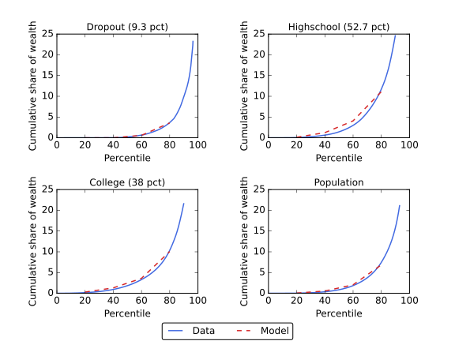
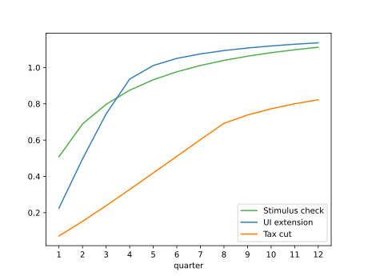
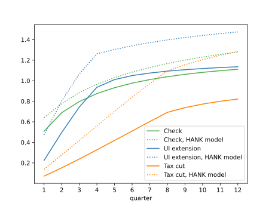

Using a heterogeneous agent model calibrated to match measured spending dynamics over four years following an income shock (Fagereng, Holm, and Natvik (2021)), we assess the effectiveness of three ï¬scal stimulus policies employed during recent recessions. Unemployment insurance (UI) extensions are the clear “bang for the buck†winner when effectiveness is measured in utility terms. Stimulus checks are second best and have two advantages (over UI): they arrive faster, and they are scalable to any desired size. A temporary (two-year) cut in the rate of wage taxation is considerably less effective than the other policies and has negligible effects in the version of our model without a multiplier.
| Â Â Â Â Â Â Â Â Â Â Â |
| Â Â Â Â Â html:Â | https://llorracc.github.io/HAFiscal/ |
| Â Â Â Â Â Â PDF:Â | HAFiscal.pdf |
| Â Â Â Slides:Â | https://llorracc.github.io/HAFiscal/HAFiscal-Slides.pdf |
| Â Â Â GitHub:Â | https://github.com/llorracc/HAFiscal |
1 Carroll: Department of Economics, Johns Hopkins University, ccarroll@jhu.edu, and NBERÂ Â Â Â .
2Crawley: Federal Reserve Board, edmund.s.crawley@frb.gov    Â
3Du: Johns Hopkins University, wdu9@jhu.edu    Â
4Frankovic: Deutsche Bundesbank, ivan.frankovic@bundesbank.de   Â
5Tretvoll: Statistics Norway, Hakon.Tretvoll@ssb.no   Â
Fiscal policies that aim to boost consumer spending in recessions have been tried in many countries in recent decades. The nature of such policies has varied widely, perhaps because traditional macroeconomic models have not provided plausible guidance about which policies are likely to be most effective—either in reducing misery (a ‘welfare metric’) or in increasing output (a ‘GDP metric’).
But a new generation of macro models has shown that when microeconomic heterogeneity across consumer circumstances (wealth; income; education) is taken into account, the consequences of an income shock for consumer spending depend on a measurable object: the intertemporal marginal propensity to consume (IMPC) introduced in Auclert, Rognlie, and Straub (2018). The IMPC extends the notion of marginal propensity to consume (MPC) to account for the speed at which households spend. Fortuitously, new sources of microeconomic data, particularly from Scandinavian national registries, have recently allowed the ï¬rst high-quality measurements of the IMPC (Fagereng, Holm, and Natvik (2021)).
Even in models that can match a given measured IMPC pattern, the relative merits of alternative policies depend profoundly both on the metric (welfare or GDP) and on the quantitative structure of the rest of the model – for example, whether multipliers exist and how they work. Here, after constructing a microeconomically credible heterogeneous agent (HA) model, we examine its implications for how optimal stimulus policies depend on the existence, nature, and timing of any “multipliers,†which, following Krueger, Mitman, and Perri (2016), we model in a clean and simple way. As a result, the interaction of the multiplier (if any) with the other elements of the model is reasonably easy to understand. In order to ease interpretation of our results, as well as to keep the model tractable, our primary analysis is based on an aggregation of individual consumption responses. This partial equilibrium analysis allows us to introduce elements such as the fact that our multiplier only acts during a recession. However, a general equilibrium approach may introduce transmission channels that we miss in our primary analysis. Accordingly, we also analyze a simple HANK and SAM model that embeds our households’ consumption responses in a general equilibrium framework.1
By “microeconomically credible,†we mean a model that can match three things that we take to be stylized facts: (1) the measured IMPCs from Fagereng, Holm, and Natvik (2021), (2) the cross-sectional distribution of liquid wealth (following Kaplan and Violante (2014)’s deï¬nition of liquid wealth) and (3) the spending induced by the unanticipated transitory shock is “front-loaded.†What we mean by this is that a fairly standard HA model (speciï¬cally, the model in Carroll, Slacalek, Tokuoka, and White (2017)) can match both the initial distribution of liquid wealth, and the pattern of spending in periods after the shock arrives. But the prediction of that model for spending in the initial period is below the actual spending measured. We call the extra spending that happens immediately in the period of receipt of the stimulus a “splurge.”
Our splurge behavior is common across households and independent of their liquid wealth holdings, consistent with the emerging literature showing that even high-wealth households seem to have a high ‘initial MPC’ out of income shocks.2
The evidence of front-loading from Fagereng, Holm, and Natvik (2021) is consistent with ï¬ndings elsewhere in the literature; perhaps the closest direct comparison is to a recent paper by
3 This ‘splurge’ model is also consistent with evidence, from Ganong and Noel (2019), that spending drops sharply following the large and predictable drop in income after the exhaustion of unemployment beneï¬ts.4
The resulting structural model could be used to evaluate a wide variety of consumption stimulus policies. We examine three that have been implemented in recent recessions in the United States (and elsewhere): an extension of unemployment insurance (UI) beneï¬ts, a means-tested stimulus check, and a payroll tax cut.
Our ï¬rst metric of policy effectiveness is “multiplication bang for the buck”: For a dollar of spending on a particular policy, how much multiplication is induced? Timing matters because in our model (following the empirical literature), the size of any “consumption multiplier†depends on the economic conditions that prevail when the extra spending occurs. Our strategy to illuminate this point is twofold. First, we calculate the policy-induced spending dynamics in an economy with no multiplier (and, therefore, with no multiplication-bang-for-the-buck). We then follow Krueger, Mitman, and Perri (2016)’s approach to modeling the aggregate demand externality. In their approach, output depends mechanically on the level of consumption relative to steady state. But in contrast to Krueger, Mitman, and Perri (2016), the aggregate demand externality in our model is switched on only when the economy is experiencing a recession—there is no multiplication for spending that occurs after our simulated recession is over. A less stark assumption (for example, the degree of multiplication depends on the distance of the economy from its steady state, or the endogenous time-varying multiplication that arises in a New-Keynesian model) would perhaps be more realistic but also much harder to assess clearly.
Because our model’s outcomes reflect the behavior of utility-maximizing consumers, we can calculate another, possibly more interesting, measure of the effectiveness of alternative policies: their effect on consumers’ welfare. Even without multiplication, a utility-based metric can justify countercyclical policy because the larger idiosyncratic shocks to income that occur during a recession may justify a greater-than-normal degree of social insurance. We call this ‘welfare bang for the buck.’
The principal difference between the two metrics is that what matters for the degree of spending multiplication is how much of the policy-induced extra spending occurs during the recession (when the multiplier matters), while effectiveness in the utility metric also depends on who is doing the extra spending (because the recession hits some households much harder than others).
Because high-MPC consumers have high marginal utility, a standard aggregated welfare function would favor redistribution to such consumers even in the absence of a recession. We are interested in the degree of extra motivation for redistributive policies present in a recession, so we construct our social welfare metric speciï¬cally to measure only the incremental social welfare effect of alternative policies during recessions (beyond whatever redistributional logic might apply during expansions – see section 4.3).
Households do not prepare for our “MIT shock†recessions, which double the unemployment rate and the average length of unemployment spells. The end of the recession occurs as a Bernoulli process calibrated for an average recession length of six quarters, leading to a return of the unemployment rate to normal levels over time. When the multiplier is active, any reduction in aggregate consumption below its steady-state level directly reduces aggregate productivity and thus labor income. Hence, any policy stimulating consumption will also boost incomes through this aggregate demand multiplier channel.
Our results are intuitive. In the economy with no recession multiplier, the beneï¬t of a sustained payroll tax cut is negligible.5 When a multiplier exists, the tax cut has more beneï¬ts, especially if the recession continues long enough that most of the spending induced by the tax cut happens while the economy is still in recession (and the multiplier still is in force). The typical recession, however, ends long before our “sustained†wage tax cut is reversed—and even longer before lower-MPC consumers have spent down most of their extra after-tax income. Accordingly, even in an economy with a multiplier that is powerful during recessions, much of the wage tax cut’s effect on consumption occurs when any multiplier that might have existed in a recession is no longer operative.
Even leaving aside any multiplier effects, the stimulus checks have more value than the wage tax cut, because at least a portion of such checks go to unemployed people who have both high MPCs and high marginal utilities (while wage tax cuts, by deï¬nition, go only to persons who are employed and earning wages). The greatest “welfare bang for the buck†comes from the UI insurance extension, because many of the recipients are in circumstances in which they have a much higher marginal utility than they would have had in the absence of the recession, whether or not the multiplier aggregate demand externality exists.
And, in contrast to the wage-tax cut, both the UI extension and the stimulus checks concentrate most of the marginal increment to consumption at times when the multiplier (if it exists) is still powerful. A disadvantage of the UI extension, in terms of “multiplied bang for the buck,†is that (relative to the assumed-to-be-immediate-upon-recession checks) it takes somewhat more time until the transfers reach the beneï¬ciaries. Countering this disadvantage is the fact that the MPC of UI recipients is higher than that of stimulus check recipients, and, furthermore, the insurance nature of the UI payments reduces the precautionary saving motive. In the end, our model says that these two forces roughly balance each other, so that the “multiplied bang for the buck†of the two policies is similar. In the welfare metric, however, there is considerable marginal value to UI recipients even if they receive some of the beneï¬ts after the recession is over (and no multiplier exists). Hence, in the welfare metric, the relative value of UI beneï¬ts is increased compared with the policy of sending stimulus checks.
We conclude that extended UI beneï¬ts should be the ï¬rst weapon employed from this arsenal, as they have a greater welfare beneï¬t than stimulus checks and a similar “multiplied bang for the buck.†But a disadvantage is that the total amount of stimulus that can be accomplished with the UI extension is constrained by the fact that only a limited number of people become unemployed. If more stimulation is called for than can be accomplished via the UI extension, checks have the advantage that their effects scale almost linearly in the size of the stimulus—see Beraja and Zorzi (2023) for a more detailed exposition of the relation between MPC and stimulus size. The wage tax cut is also, in principle, scalable, but its effects are smaller than those of checks because recipients have lower MPCs and marginal utility than check and UI recipients. In the real world, a tax cut is also likely the least flexible of the three tools: UI beneï¬ts can be further extended, and multiple rounds of checks can be sent, but multiple rounds of changes in payroll tax rates would likely be administratively and politically more difficult.
One theme of our paper is that which policies are better or worse, and by how much, depends on both the quantitative details of the policies and the quantitative modeling of the economy.
But the tools we are using could be reasonably easily modiï¬ed to evaluate a number of other policies. For example, in the COVID-19 recession in the US, not only was the duration of UI beneï¬ts extended, but those beneï¬ts were also supplemented by substantial extra payments to every UI recipient. We did not calibrate the model to match this particular policy, but the framework could accommodate such an analysis.
Several papers have looked at ï¬scal policies that have been implemented in the U.S. under the lens of a structural model. Coenen, Erceg, Freedman, Furceri, Kumhof, Lalonde, Laxton, Lindé, Mourougane, Muir, et al. (2012) analyses the effects of different ï¬scal policies using seven different models. The models are variants of two-agent heterogeneous agent models and make no attempt to match the full distribution of liquid wealth as we do in this paper. We also attempt to match the microdata on household consumption behavior, much of which has come more recently. More closely aligned to the methodology of our paper are McKay and Reis (2016), McKay and Reis (2021), and Phan (2024) which look at the role of automatic stabilizers. By contrast, we consider discretionary policies that have been invoked after a recession has begun. Another related paper is Bayer, Born, Luetticke, and Müller (2023) who studies ï¬scal policies implemented during the pandemic. They ï¬nd that targeted stimulus through an increase in unemployment beneï¬ts has a much larger multiplier than an untargeted policy. In contrast, we ï¬nd that untargeted stimulus checks have slightly higher multiplier effects when compared with a targeted policy extending eligibility for unemployment insurance. Our results derive from the fact that—as in the data—even high liquid wealth consumers have relatively high MPCs in our model.
This paper is also closely related to the empirical literature that aims to estimate the effect of transitory income shocks and stimulus payments. We particularly focus on Fagereng, Holm, and Natvik (2021), who use Norwegian administrative panel data with sizable lottery wins to estimate the MPC out of transitory income in that year, as well as the pattern of expenditure in the following years. We build a model that is consistent with the patterns they identify. Examples of the literature that followed the Great Recession in 2008 are Parker, Souleles, Johnson, and McClelland (2013) and Broda and Parker (2014). These papers exploit the effectively random timing of the distribution of stimulus payments and identify a substantial consumption response. The results indicate an MPC that is difficult to reconcile with representative agent models.
Thus, the paper relates to the literature presenting HA models that aim to be consistent with the evidence from the micro-data. An example is Kaplan and Violante (2014), who build a model where agents save in both liquid and illiquid assets. The model yields a substantial consumption response to a stimulus payment, since MPCs are high both for constrained, low-wealth households and for households with substantial net worth that is mainly invested in the illiquid asset (the “wealthy hand-to-mouth”). Carroll, Crawley, Slacalek, and White (2020) present an HA model that is similar in many respects to the one we study. Their focus is on predicting the consumption response to the 2020 U.S. CARES Act that contains both an extension of unemployment beneï¬ts and a stimulus check. However, neither of these papers attempts to evaluate and rank the effectiveness of different stimulus policies, as we do.
Kaplan and Violante (2022) discuss different mechanisms used in HA models to obtain a high MPC and the tension between that and ï¬tting the distribution of aggregate wealth. We use one of the mechanisms they consider, ex-ante heterogeneity in discount factors, and build a model that delivers both high average MPCs and a distribution of liquid wealth consistent with the data. The model allows for splurge consumption and thus also delivers substantial MPCs for high-liquid-wealth households. This helps the model match not only the initial MPC, but also the propensity to spend out of a windfall for several periods after it is obtained.6
In our model, consumers do not adjust their labor supply in response to the stimulus policies. Our assumption is broadly consistent with the empirical ï¬ndings in Ganong, Greig, Noel, Sullivan, and Vavra (2022) and Chodorow-Reich and Karabarbounis (2016). However, the literature is conflicted on this subject and Hagedorn, Manovskii, and Mitman (2017) and Hagedorn, Karahan, Manovskii, and Mitman (2019) ï¬nd that extensions of unemployment insurance affect both search decisions and vacancy creation leading to a rise in unemployment. Kekre (2022), on the other hand, evaluates the effect of extending unemployment insurance in the period from 2008 to 2014. He ï¬nds that this extension raised aggregate demand and implied a lower unemployment rate than without the policy. However, he does not attempt to compare the stimulus effects of extending unemployment insurance with other policies.
One criterion to rank policies is the extent to which spending is “multiplied,†and our paper therefore relates to the vast literature discussing the size and timing of any multiplier. Our focus is on policies implemented in the aftermath of the Great Recession, a period when monetary policy was essentially ï¬xed at the zero lower bound (ZLB). We therefore do not consider monetary policy responses to the policies we evaluate in our primary analysis, and our work thus relates to papers such as Christiano, Eichenbaum, and Rebelo (2011) and Eggertsson (2011), who argue that ï¬scal multipliers are higher in such circumstances. Hagedorn, Manovskii, and Mitman (2019) present an HA model with both incomplete markets and nominal rigidities to evaluate the size of the ï¬scal multiplier and also ï¬nd that it is higher when monetary policy is constrained. Unlike us, they focus on government spending instead of transfers and are interested in different options for ï¬nancing that spending. Broer, Krusell, and Öberg (2023) also focus on ï¬scal multipliers for government spending and show how they differ in representative agent and HA models with different sources of nominal rigidities. Ramey and Zubairy (2018) investigate empirically whether there is support for the model-based results that ï¬scal multipliers are higher in certain states. While they ï¬nd evidence that multipliers are higher when there is slack in the economy or the ZLB binds, the multipliers they ï¬nd are still below one in most speciï¬cations. In any case, we condition on policies being implemented in a recession—when, this literature argues, multipliers are higher—but it is not crucial for our purposes whether the multipliers are greater than one or not. We are concerned with relative multipliers, and the multiplier is only one of the two criteria we use to rank policies.
The second criterion to rank policies is our measure of welfare. Thus, the paper relates to the recent literature on welfare comparisons in HA models. Both Bhandari, Evans, Golosov, and Sargent (2021) and Dávila and Schaab (2022) introduce ways of decomposing welfare effects. In the former case, these are aggregate efficiency, redistribution and insurance, while the latter further decomposes the insurance part into intra- and intertemporal components. These papers are related to ours, but we do not decompose the welfare effects. Regardless of decomposition, we want to (1) use a welfare measure as an additional way of ranking policies and (2) introduce a measure that abstracts from any incentive for a planner to redistribute in the steady state (or “normal†times).
The paper is organized as follows. Section 2 presents our baseline partial equilibrium model of households’ consumption and saving problem as well as how we model a recession and the potential response in terms of three different consumption stimulus policies. Section 3 describes the steps we take to parameterize the model and discusses the implications for some moments that we do not target. In section 4 we compare the three policies implemented in a recession both in terms of their multipliers and in terms of a welfare measure that we introduce. Section 5 presents a general equilibrium HANK and SAM model where we compare the multipliers of the same three policies to the partial equilibrium results. Section 6 concludes, and, ï¬nally, the appendix shows results from a version of the model without splurge consumption and provides more details of the HANK and SAM model discussed in Section 5.
Consumers differ by their level of education and, within education group, by subjective discount factors (calibrated to match the within-group distribution of liquid wealth). We ï¬rst describe each kind of consumer’s problem, given an income process with permanent and transitory shocks calibrated to their type, as well as type-speciï¬c shocks to employment. The next step describes the arrival of a recession and the policies we study as potential ï¬scal policy responses. The last section discusses an extension incorporating aggregate demand effects that induce feedback from aggregate consumption to income and (via the marginal propensity to consume) back to consumption, amplifying the effect of a recession when it occurs.
A consumer i has education e(i) and a subjective discount factor βi. The consumer faces a stochastic income stream, yi,t, and chooses to consume a fraction of that income when it arrives—the ‘splurge’, described in the introduction. With what is left over, the consumer chooses to optimize consumption without regard to the fraction that was already spent. Therefore, consumption each period for consumer i can be written as
| (1) |
where ci,t is total consumption, csp,i,t is the splurge consumption, and copt,i,t is the consumer’s optimal choice of consumption after splurging. Splurge consumption is simply a fraction of income:
| (2) |
while the optimized portion of consumption is chosen to maximize the perpetual-youth lifetime expected-utility-maximizing consumption, where D is the end-of-life probability:
| (3) |
We use a standard CRRA (constant relative risk aversion) utility function, so u(c) = c1−γ∕(1 −γ) for γ≠1 and u(c) = log(c) for γ = 1, where γ is the coefficient of relative risk aversion. The optimization is subject to the budget constraint, given existing market resources mi,t and income state, and a no-borrowing constraint:
| (4) |
where R is the gross interest factor for accumulated assets ai,t.
Consumers face a stochastic income process with permanent and transitory shocks to income, along with unemployment shocks. In normal times, consumers who become unemployed receive unemployment beneï¬ts for two quarters. Permanent income evolves according to:
| (5) |
where ψi,t+1 is the shock to permanent income and Γe(i) is the average growth rate of income
for the consumer’s education group e(i).7 The realized growth rate of permanent income for
consumer i is thus  i,t+1 = ψi,t+1Γe(i). The shock to permanent income is normally distributed
with variance σψ2.
i,t+1 = ψi,t+1Γe(i). The shock to permanent income is normally distributed
with variance σψ2.
The actual income a consumer receives will be subject to the individual’s employment status as well as transitory shocks, ξi,t:
| (6) |
where ξi,t is normally distributed with variance σξ2, and ρ b and ρnb are the replacement rates for an unemployed consumer who is or is not eligible for unemployment beneï¬ts, respectively.
A Markov transition matrix Î generates the unemployment dynamics where the number of states is given by 2 plus the number of periods that unemployment beneï¬ts last. An employed consumer can continue being employed or move to being unemployed with beneï¬ts.8 The ï¬rst row of Î is thus given by [1 −πeue(i),π eue(i),0], where π eue(i) indicates the probability of becoming unemployed from an employed state and 0 is a vector of zeros of the appropriate length. Note that we allow this probability to depend on the education group of consumer i and will calibrate this parameter to match the average unemployment rate for each education group. Upon becoming unemployed, all consumers face a probability πue of transitioning back into employment and a probability 1 −πue of remaining unemployed with one less period of remaining beneï¬ts. After transitioning into the unemployment state where the consumer is no longer eligible for beneï¬ts, the consumer will remain in this state until becoming employed again. The probability of becoming employed is thus the same for each of the unemployment states and education groups.
We model the arrival of a recession, and the government policy response to it, as an unpredictable event—an MIT shock. We have four types of shocks: one representing a recession and one for each of the three different policy responses we consider. The policy responses are usually modeled as in addition to the recession, but we also consider a counterfactual in which the policy response occurs without a recession in order to understand the welfare effects of the policy.
Recession. At the onset of a recession, several changes occur. First, the unemployment rate for each education group doubles: Those who would have been unemployed in the absence of a recession are still unemployed, and an additional number of consumers move from employment to unemployment. Second, conditional on the recession continuing, the employment transition matrix is adjusted so that unemployment remains at the new high level and the expected length of time for an unemployment spell increases. In our baseline calibration, discussed in detail in section 3.3.1, we set the expected length of an unemployment spell to one and a half quarters in normal times, and this length increases to four quarters in a recession. Third, the end of the recession occurs as a Bernoulli process calibrated for an average length of recession of six quarters. Finally, at the end of a recession, the employment transition matrix switches back to its original probabilities, and, as a result, the unemployment rate trends down over time, back to its steady-state level.
Policies. The policies we consider in response to a recession are inspired by the Economic Stimulus Act of 2008 and the Tax Relief, Unemployment Insurance Reauthorization, and Job Creation Act of 2010. The former included means tested stimulus checks in the form of tax rebates, and the latter included both an extension of unemployment beneï¬ts and a tax cut. Based on these examples we therefore consider the following stimulus policies in our framework:
1. Stimulus check. In this policy response, the government sends money to every consumer that directly increases the household’s market resources. The checks are means-tested depending on permanent income. A check for $1,200 is sent to every household with permanent income less than $100,000, and this amount is then linearly reduced to zero for households with a permanent income greater than $150,000. Similar policies were implemented in the U.S. in 2001, 2008, and during the pandemic.
2. Extended unemployment beneï¬ts. In this policy response, unemployment beneï¬ts are extended from two quarters to four quarters. That is, those who become unemployed at the start of the recession, or who were already unemployed, will receive unemployment beneï¬ts for up to four quarters (including quarters leading up to the recession). Those who become unemployed one quarter into the recession will receive up to three quarters of unemployment beneï¬ts. These extended unemployment beneï¬ts will occur regardless of whether the recession ends, and no further extensions are granted if the recession continues. This policy reflects temporary changes made to unemployment beneï¬ts in the U.S. following the great recession.
3. Payroll tax cut. In this policy response, employee-side payroll taxes are reduced for a period of eight quarters.9 During this period, which continues irrespective of whether the recession continues or ends, employed consumers’ income is increased by 2 percent. The income of the unemployed is unchanged by this policy. Households also believe there is a 50-50 chance that the tax cut will be extended by another two years if the recession has not ended when the ï¬rst tax cut expires.10 The payroll tax cut introduced in the U.S. in 2010 was itself an extension of previously implemented cuts and had a two-year horizon.
Financing the policies. Some work in the HA macro literature has shown that if taxes are raised immediately to offset any ï¬scal stimulus, results can be very different than they would be if, as occurs in reality, recessionary policies are debt ï¬nanced. However, typical ï¬scal rules assume that any increase in debt gets ï¬nanced over a long interval. Accordingly, almost all of the effects of any particular ï¬scal rule will be similar for each of our policies so long as the great majority of the debt is repaid after the short recessionary period that is our main focus.
To keep our analysis as simple as possible, we do not model the debt repayment. Any of a variety of ï¬scal rules could be imposed for the period following our short period of interest, but we did not want to choose any particular ï¬scal rule in order to avoid making a choice that has little consequence for our key question. Advocates of alternative ï¬scal rules likely already have intuitions about how such rules’ economic consequences differ, but those consequences—under our partial equilibrium analysis—will be similar for all three policies we consider. Alternative choices of ï¬scal rules will therefore not affect the ranking of policies that is our principal concern.11
Our baseline model is a partial equilibrium model that does not include any feedback from aggregate consumption to income. In an extension to the model, we add aggregate demand effects during the recession. The motivation for this speciï¬cation comes from the idea that spending in an economy with substantial slack and in which the central bank is unable to prevent a recession will result in higher utilization rates and greater output. By contrast, government spending in an economy running at potential with an active monetary policy will not succeed in increasing output. The recent inflation experience of the U.S. provides some evidence that output responds highly non-linearly to aggregate demand. This idea is explored in a recent revival of research into non-linear Phillips curves, such as Benigno and Eggertsson (2023) and Blanco, Boar, Jones, and Midrigan (2024).
With this extension, any changes in consumption away from the steady-state consumption level feed back into labor income. Aggregate demand effects are evaluated as
| (7) |
where  is the level of consumption in the steady state. Idiosyncratic income in the aggregate
demand extension is multiplied by AD(Ct):
is the level of consumption in the steady state. Idiosyncratic income in the aggregate
demand extension is multiplied by AD(Ct):
| (8) |
The series yAD,i,t is then used for each consumer’s budget constraint.
This section describes how we set the model’s parameters. First, we estimate the extent to which consumers ‘splurge’ when receiving an income shock. Given the lack of empirical evidence of the marginal propensity to consume over time for the US, we use instead Norwegian data to estimate the splurge. Speciï¬cally, we calibrate our model to the Norwegian economy and match evidence from Norway on the proï¬le of the marginal propensity to spend over time and across different wealth levels, as provided by Fagereng, Holm, and Natvik (2021).12
Second, we set up the full model on U.S. data, taking the splurge factor as given from the Norwegian estimation In the full model, agents differ according to their level of education and their subjective discount factors. A subset of the parameters in the model are calibrated equally for all types, and some parameters are calibrated to be speciï¬c to each education group. Finally, a distribution of subjective discount factors is estimated separately for each education group to match features of each within-group liquid wealth distribution.
The splurge allows us to capture the shorter- and longer-term response of consumption to income shocks, especially for consumers with signiï¬cant liquid wealth. The main aim of this paper, however, is to rank consumption stimulus policies, not to provide a microfoundation for the splurging behavior. We view the splurge factor as a model device that enables us to rank the policies in a model that is consistent with the best available micro-evidence of spending patterns over time after a transitory income shock. In appendix A we provide results from our model without a splurge factor. There we show that such a model provides a worse ï¬t to the moments in the data that we are interested in, but not dramatically so, and that our conclusions regarding the ranking of the policies are not affected.
The speciï¬c exercise we carry out in this section, is to show that our model can account well for the results of Fagereng, Holm, and Natvik (2021), who study the effect of lottery winnings in Norway on consumption using millions of records from the Norwegian population registry. We calibrate our model to reflect the Norwegian economy and, using their results, estimate the splurge factor, as well as the distribution of discount factors in the population, to match two empirical moments.
First, we take from Fagereng, Holm, and Natvik (2021) the marginal propensity to consume out of a one-period income shock. We target not only the initial (aggregate) response of consumption to the income shock, but also the subsequent effect on consumption in years one through four after the shock. We also target the initial consumption response in the cross-section, i.e. across the quartiles of the liquid wealth distribution, for which empirical estimates are also provided. The shares of lottery winnings expended at different time horizons, as found in Fagereng, Holm, and Natvik (2021), are plotted in ï¬gure 1a. Table 1 (second row) shows the initial consumption response across liquid wealth quartiles.
Second, we match the steady-state distribution of liquid wealth in the model to its empirical counterpart. Because of the lack of data on the liquid wealth distribution in Norway, we use the corresponding data from the United States, assuming that liquid wealth inequality is comparable across these countries.13 Speciï¬cally, we impose as targets the cumulative liquid wealth shares for the entire population at the 20th, 40th, 60th, and 80th income percentiles, which, in data from the Survey of Consumer Finances (SCF) in 2004 (see section 3.2 for further details), equal 0.03 percent, 0.35 percent, 1.84 percent, and 7.42 percent, respectively. Hence, 92.6 percent of the total liquid wealth is held by the top income quintile. We also target the mean liquid wealth to income ratio of 6.60. The data are plotted in ï¬gure 1b.
Figure 1 Marginal propensity to consume over time and the liquid wealth
distribution in the model and the data
{ï¬g:splurge_estimation}
Note: Panel (a) shows the ï¬t of the model to the dynamic consumption response estimated in
Fagereng, Holm, and Natvik (2021); see their ï¬gure A5. Panel (b) shows the ï¬t of the model to
the distribution of liquid wealth (see Section 3.2 for the deï¬nition) from the 2004 SCF.
For this estimation exercise, the remaining model parameters are calibrated to reflect the Norwegian economy. Speciï¬cally, we set the real interest rate to 2 percent annually and the unemployment rate to 4.4 percent, in line with Aursland, Frankovic, Kanik, and Saxegaard (2020). The quarterly probability to survive is calibrated to 1 − 1∕160, reflecting an expected working life of 40 years. Aggregate productivity growth is set to 1 percent annually, following Kravik and Mimir (2019). The unemployment net replacement rate is calibrated to 60 percent, following OECD (2020). Finally, we set the real interest rate on liquid debt to 13.6 percent, following data from the Norwegian debt registry Gjeldsregistret (2022).14
Estimates of the standard deviations of the permanent and transitory shocks are taken from Crawley, Holm, and Tretvoll (2024), who estimate an income process on administrative data for Norwegian males from 1971 to 2014. The estimated annual variances for the permanent and transitory shocks are 0.004 and 0.033, respectively.15 As in Carroll, Crawley, Slacalek, Tokuoka, and White (2020), these are converted to quarterly values by multiplying the permanent and transitory shock variances by 1∕4 and 4, respectively. Thus, we obtain quarterly standard deviations of σψ = 0.0316 and σξ = 0.363.
Using the calibrated model, we simulated unexpected lottery winnings and calculate the share of the lottery spent in each year. Speciï¬cally, each simulated agent receives a lottery win in a random quarter of the ï¬rst year of the simulation. The size of the lottery win is itself random and spans the range of lottery sizes found in Fagereng, Holm, and Natvik (2021). The estimation procedure minimizes the distance between the target and model moments by selecting the splurge factor and the distribution of discount factors in the population, where the latter are assumed to be uniformly distributed in the range [β −∇,β + ∇]. We approximate the uniform distribution of discount factors with a discrete approximation and let the population consist of eight different types.
The estimation yields a splurge factor of 0.249 and a distribution of discount factors described by β = 0.968 and ∇ = 0.0578. Given these estimated parameters and the remaining calibrated ones, the model is able to replicate the time path of consumption in response to a lottery win from Fagereng, Holm, and Natvik (2021) and the targeted distribution of liquid wealth very well, see Figure 1. Also, the targeted moments discussed in Table 1 are captured relatively well. In particular, the model is able to account for the empirical fact that MPC consume for high-wealth agents is substantially larger than zero, see the ï¬rst column.
Before we move on to the parameterization of the full model, we describe in detail the data that we use to get measures of permanent income, liquid wealth, and the division of households into educational groups in the United States. We use data on the distribution of liquid wealth from the 2004 wave of the SCF. We restrict our attention to households where the head is of working age, which we deï¬ne to be in the range from 25 to 62. The SCF-variable “normal annual income†is our measure of the household’s permanent income, and, to exclude outliers, we drop the observations that make up the bottom 5 percent of the distribution of this variable. The smallest value of permanent income for households in our sample is thus $16,708.
Liquid wealth is deï¬ned as in Kaplan and Violante (2014) and consists of cash, money market, checking, savings, and call accounts; directly held mutual funds; and stocks and bonds. We subtract off liquid debt, which is the revolving debt on credit card balances. Note that the SCF does not contain information on cash holdings, so these are imputed with the procedure described in Appendix B.1 of Kaplan and Violante (2014), which also describes the credit card balances that are considered part of liquid debt. We drop any households that have negative liquid wealth.
Households are classiï¬ed into three educational groups. The ï¬rst group, “Dropout,†applies to households where the head of household has not obtained a high school diploma; the second group, “Highschool,†includes heads of households who have a high school diploma and those who, in addition, have some years of college education without obtaining a bachelor’s degree; and the third group, “College,†consists of heads of households who have obtained a bachelor’s degree or higher. With this classiï¬cation of the education groups, the Dropout group makes up 9.3 percent of the population, the Highschool group 52.7 percent, and the College group 38.0 percent.
With our sample selection criteria, we are left with a sample representing about 61.3 million U.S. households.
With households classiï¬ed into the three education groups using the SCF data, we proceed to set the parameters of the model as follows. First, we calibrate a set of parameters that apply to all types of houesholds in the model. Second, we calibrate another set of parameters that are speciï¬c to each education group to capture broad differences across these groups. Finally, given the calibrated parameters we estimate discount factor distributions for each education group that allow us to match the distribution of liquid wealth in each group.
The model is a simpliï¬ed model for households in that we do not take into account heterogeneity across household size or composition. The households are ex-ante heterogeneous in their subjective discount factors as well as their level of education. We classify the education level of the household based on the education of the head of the household, and we typically think of individual characteristics as applying to that person.
A period in the model is one quarter. This choice makes it realistic to consider stimulus policies that are implemented in the same period as a recession starts.
Panel A of table 2, lists parameters that are calibrated equally across all types in the model. Panel B of table 2, lists parameters in the model that are education speciï¬c. For completeness, panel C of table 2 summarizes the parameters describing how we model a recession and the three policies we consider as potential responses to a recession.
Preferences, survival and interest rates. All households are assumed to have a coefficient of relative risk aversion equal to γ = 2. We also assume that all households have the same propensity to splurge out of transitory income gains and set ς = 0.249, the value estimated in section 3.1. However, each education group is divided into types that differ in their subjective discount factors. The distributions of discount factors for each education group are estimated to ï¬t the distribution of liquid wealth within that group, and this estimation is described in detail in section 3.3.2. Regardless of type, households face a constant survival probability each quarter. This probability is set to 1 − 1∕160, reflecting an expected working life of 40 years. The real interest rate on households’ savings is set to 1 percent per quarter.
Labor market risk while employed. When consumers are born, they receive an initial level of permanent income. This initial value is drawn from a log-normal distribution that depends on the education level the household is born with. For each education group, the parameters of the distribution are determined by the mean and standard deviation of log-permanent income for households in that group where the head of the household is of age 25 in the SCF 2004. For the Dropout group, the mean initial value of quarterly permanent income is $6,200; for the Highschool group, it is $11,100; and for the College group, it is $14,500. The standard deviations of the log-normal distributions for each group are, respectively, 0.32, 0.42, and 0.53.
While households remain employed, their income is subject to both permanent and transitory idiosyncratic shocks. These shocks are distributed equally for the three education groups. The standard deviations of these shocks are taken from Carroll, Crawley, Slacalek, Tokuoka, and White (2020), who set the standard deviations of the transitory and permanent shocks to σξ = 0.346 and σψ = 0.0548, respectively.
Permanent income also grows, on average, with a growth rate Γe(i) that depends on the level of education. These average growth rates are based on numbers from Carroll, Crawley, Slacalek, and White (2020), who construct age-dependent expected permanent income growth factors using numbers from Cagetti (2003) and ï¬t the age-dependent numbers to their life-cycle model. We construct the quarterly growth rates of permanent income in our perpetual-youth model by taking the average of the age-dependent growth rates during a household’s working life. The average gross quarterly growth rates that we obtain for the three education groups are then Γd = 1.0036, Γh = 1.0045, and Γc = 1.0049.
Unemployment. Consumers also face the risk of becoming unemployed and will then have access to unemployment beneï¬ts for a certain period. The parameters describing the unemployment beneï¬ts in normal times are based on the work of Rothstein and Valletta (2017), who study the effects on household income of unemployment and of running out of eligibility for beneï¬ts. The unemployment beneï¬ts replacement rate is thus set to ρb = 0.7 for all households, and when beneï¬ts run out, the unemployment replacement rate without any beneï¬ts is set to ρnb = 0.5. These replacement rates are set as a share of the households’ permanent income and are based on the initial drop in income upon entering an unemployment spell, presented in ï¬gure 3 in Rothstein and Valletta (2017).16
The duration of unemployment beneï¬ts in normal times is set to two quarters, so that our Markov transition matrix Î has four states. This length of time corresponds to the mean duration of unemployment beneï¬ts across U.S. states from 2004 to mid-2008 of 26 weeks, reported by Rothstein and Valletta (2017).
The probability of transitioning out of unemployment is set to match the average duration of an unemployment spell in normal times. In data from the Bureau of Labor Statistics, this average duration was 19.6 weeks or 1.5 quarters in 2004. We do not have data on education-speciï¬c duration rates, however, so we set the average duration of unemployment to 1.5 quarters for all households. This implies that the transition probability from unemployment to employment is set to πue = 2∕3.
The Bureau of Labor Statistics provide data on unemployment rates for different education groups, and we match the average rate in each group in 2004 by setting an education-speciï¬c probability of transitioning from employment into unemployment. Note that this calibration strategy is consistent with the results in Mincer (1991) who ï¬nds that the main difference between education groups is in the incidence of unemployment, and not its duration.17 More recent work by Elsby and Hobijn (2010) includes data upto 2009 and echoes Mincer’s results.
The average unemployment rate in 2004 was 8.5 percent for the Dropout group, 4.4 percent for the Highschool group, and 2.7 percent for the College group. These values imply that the probabilities of transitioning into unemployment in normal times are πeud = 6.2 percent, πeuh = 3.1 percent, and π euc = 1.8 percent, respectively.18
Finally, the strength of the aggregate demand effect in recessions is determined by the consumption elasticity of productivity. We follow Krueger, Mitman, and Perri (2016) and set this to κ = 0.3.
Discount factor distributions are estimated separately for each education group to match the distribution of liquid wealth for households in that group. To do so, we let each education group consist of types that differ in their subjective discount factor,β. The discount factors within each group e ∈{d,h,c} are assumed to be uniformly distributed in the range [βe −∇e,βe + ∇e]. The parameters βe and ∇e are chosen for each group separately to match the median liquid-wealth-to-permanent-income ratio and the 20th, 40th, 60th, and 80th percentile points of the Lorenz curve for liquid wealth for that group. We approximate the uniform distribution of discount factors with a discrete approximation and let each education group consist of seven different types.
Panel A of table 3 shows the estimated values of (βe,∇e) for each education group. The panel also shows the minimum and maximum values of the discount factors we actually use in the model when we use a discrete approximation with seven values to approximate the uniform distribution of discount factors. Panel B of table 3 shows that with these estimated distributions, we can exactly match the median liquid-wealth-to-permanent-income ratios for each education group. Figure 2 shows that with the estimated distributions, the model quite closely matches the distribution of liquid wealth within each education group as well as for the population as a whole. Thus, our model does not suffer from the “missing middle†problem, identiï¬ed in Kaplan and Violante (2022), in which the middle of the wealth distribution has too little wealth.
Note: Panel (A) shows the estimated parameters of the discount distributions for each education
group. It also shows the minimum and maximum values we use in our discrete approximation to
the uniform distribution of discount factors for each group. The ∗ indicates that the highest value
in the uniform distribution of discount factor values violates the growth impatience condition
(GIC) and has been replaced. Panel (B) shows the weighted median ratio of liquid wealth to
permanent income from the 2004 SCF and in the model. In the annual data from the SCF, the
annual PI is divided by 4 to obtain a quarterly number.
![-Panel-(A-)-Estimated--discount-factor-distributions-----------------------------
Dropout Highschool College
-------------------------------------------------------------------------------
(βe,∇e ) (0.719, 0.318 ) (0.911, 0.137 ) (0.983, 0.014 )
(Min, max ) in approximation (0.447, 0.991 ) (0.793, 0.990∗) (0.971, 0.995 )
-------------------------------------------------------------------------------
Panel (B ) Estimation targets
------------------------------------------------------------------------------
Dropout Highschool College
------------------------------------------------------------------------------
Median LW/ quarterly PI (data, percent) 4.64 30.2 112.8
Median LW/ quarterly PI (model, percent ) 4.64 30.2 112.8
------------------------------------------------------------------------------](HAFiscal13x.svg)
One point we should note concerns the estimated discount factor distribution for the Highschool group. Panel A of table 3 reports values of βh = 0.911 and ∇h = 0.137. With these values, the largest discount factors in our discrete approximation of the uniform distribution in the range [βh −∇h,βh + ∇h] would be greater than 1. More importantly, the value would violate the Growth Impatience Condition (GIC), discussed in Carroll (2022). (The GIC is required to prevent the ratio of total wealth to total income of any group from approaching inï¬nity. It does this by making sure that the growth of wealth of the group is less than or equal to the growth of income.) We replace values violating the GIC with values close to the upper bound on β imposed by the GIC. In panel A of table 3 the largest value is marked by a ∗ to indicate that it has been replaced to avoid violating the GIC. We always impose that the GIC is satisï¬ed in the estimation of the discount factor distributions, but for the baseline parameter values it is only binding for the Highschool group. Thus, the estimation can select a large value of ∇h without violating the constraint.19

Note: The discount factor distributions are estimated separately for each education group to ï¬t
the median liquid-wealth-to-permanent-income ratio and the 20th, 40th, 60th, and 80th percentile
points of the Lorenz curve for liquid wealth for that group. The “Population†panel compares the
wealth distribution that results from pooling the three groups in the model to the overall wealth
distribution in the data.
Also, note that several of the types in the Dropout group have very low discount factors and are very impatient. In this way, the model ï¬ts the feature of the data for the Dropout group that the bottom quintiles do not save at all and do not accumulate any liquid wealth. Very low estimates for discount factors are in line with those obtained in the literature on payday lending.20
Before we move on to compare different consumption stimulus policies in the calibrated model, we also report implications of the model for some non-targeted moments. Panel A of table 4 shows the wealth distribution across the three education groups in the data and in the model. The model matches these shares quite closely, which may not be surprising given that we calibrate the size of each group and we manage to ï¬t the wealth distribution within each group separately. The panel also reports the average marginal propensity to consume for the different groups. To be comparable to numbers reported in Fagereng, Holm, and Natvik (2021), these are calculated as the average MPC in the year of a lottery win. Lottery wins occur in a random quarter of the year that differs across individuals. The MPC for an individual depends on the spending pattern after the win, and these are averaged across individuals within each education group.
Panel B of table 4 shows similar numbers to Panel A, sorted by quartiles of the liquid wealth distribution instead of education groups. Our model yields a slightly more concentrated liquid wealth distribution than in the data. However, it does produce a fairly high MPC even for households in the highest quartile of the liquid wealth distribution. This is consistent with the results found in the Norwegian data by Fagereng, Holm, and Natvik (2021), but also with recent results in Graham and McDowall (2024). In an administrative dataset from a large US ï¬nancial institution, they ï¬nd that the spending response to an income receipt is large across the distribution of liquid asset holdings. In our model, we obtain this result due to the inclusion of the splurge factor. As shown in Appendix A, the model is not able to generate a high MPC for the highest wealth quartile without splurge consumption.


Finally, we consider the implications of our model for two different patterns of spending over time. The ï¬rst pattern is the dynamics of spending after a lottery win from Fagereng, Holm, and Natvik. This pattern was used in the estimation of the splurge factor in section 3.1, but was not targeted when estimating the discount factor distributions for each education group in section 3.3.2. Figure 2a shows that the model that is estimated taking the value of the splurge as given, results in a distribution of spending over time that is very similar to the one found in the Norwegian data.
The second pattern concerns the dynamics of income and spending for households that become unemployed and remain unemployed long enough for unemployment beneï¬ts to expire. Figure 2b shows the pattern of income and spending for such households. Ganong and Noel (2019) report the empirical result that nondurable spending drops by 12 percent the month when beneï¬ts expire. Our quarterly model is broadly consistent with this, and the drop in spending the quarter after the expiry of UI beneï¬ts is 18 percent.
Figure 3 Marginal propensity to consume over time and the spending upon expiry
of UI benefits in the model
{ï¬g:untargetedMoments}
Note: Panel (a) compares the dynamic consumption response in the model to the estimates
in Fagereng, Holm, and Natvik (2021); see their Figure A5. Panel (b) shows the evolution of
income and spending for households who remain unemployed long enough for UI beneï¬ts to
expire; see Figure 2 in Ganong and Noel (2019).
In this section, we present our results where we compare three policies to provide ï¬scal stimulus in our calibrated model. The policies we compare are a means-tested stimulus check, an extension of unemployment beneï¬ts, and a payroll tax cut. Each policy is implemented at the start of a recession, and we compare results both with and without aggregate demand effects being active during the recession. First, we present impulse responses of aggregate income and consumption after the implementation of each policy. Then we compare the policies in terms of their cumulative multipliers and in terms of their effect on a welfare measure that we introduce. Finally, based on these comparisons, we can rank the three policies.
The impulse responses that we present for each stimulus policy are constructed as follows:
A recession hits in quarter one.
We compute the subsequent path for the economy without any policy introduced in response to the recession.
We also compute the subsequent path for the economy with a given policy introduced at the onset of the recession in quarter one.
The impulse responses we present are then the difference between these two paths for the economy and show the effect of a policy relative to a case where no policy was implemented.
The solid lines show these impulse responses for an economy where the aggregate demand effects described in section 2.3 are not active, and the dashed lines show impulse responses for an economy where the aggregate demand effects are active during the recession.
Red lines refer to aggregate labor and transfer income, and blue lines refer to consumption.
Note that all graphs show the average response of income and consumption for recessions of different length. Speciï¬cally, we simulate recessions lasting from only one quarter up to 20 quarters. We then take the sum of the results across all recession lengths weighted by the probability of this recession length occurring (given our assumption of an average recession length of six quarters).
Figure 4 Impulse responses of aggregate income and consumption to policy shocks
during recessions with and without aggregate demand effectsï¬g:Policyrelrecession
Figure 3a shows the impulse response of income and consumption when stimulus checks are issued in the ï¬rst quarter of a recession. In the model without a multiplier, the stimulus checks account for 5 percent of the ï¬rst quarter’s income. In the following quarters, there are no further stimulus payments, and income remains the same as it would have been without the stimulus check policy. Consumption is about 2.5 percent higher in the ï¬rst quarter, which includes the splurge response to the stimulus check. Consumption then drops to less than 1 percent above the counterfactual, and the remainder of the stimulus check money is then spent over the next few years. In the model with aggregate demand effects, income in the ï¬rst quarter is 6 percent higher than the counterfactual, as the extra spending feeds into higher incomes. Consumption in this model jumps to a higher level than without aggregate demand effects and comes down more slowly as the feedback effects from consumption to income dampen the speed with which income—and hence the splurge—return to zero. After a couple of years, when the recession is most likely over and aggregate demand effects are no longer in place, income is close to where it would be without the stimulus check policy, although consumption remains somewhat elevated.
The impulse responses in ï¬gure 3b show the response to a policy that extends unemployment beneï¬ts from 6 months to 12 months for a period of a year. In the model without aggregate demand effects, the path for income now depends on the number of consumers who receive the extended unemployment beneï¬ts. These consumers are those who have been unemployed for between 6 and 12 months. In the ï¬rst quarter of the recession, the newly unemployed receive unemployment beneï¬ts regardless of whether they are extended or not. Therefore, it is in the second and third quarters, when the effects of the recession on long-term unemployment start to materialize, that the extended UI payments ramp up, amounting to an aggregate increase in quarterly income by 0.7 percent. By the ï¬fth quarter, the policy is no longer in effect, and income from extended unemployment goes to zero. Consumption in the ï¬rst quarter jumps by more than income (by 0.3 percent), prompted by both the increase in expected income and the reduced need for precautionary saving given the extended insurance. In the model without aggregate demand effects, consumption is only a little above the counterfactual by the time the policy is over. In the model with aggregate demand effects, there is an extra boost to income of about the same size in the ï¬rst and second quarters. As this extra aggregate demand induced income goes to employed consumers, more of it is saved, and consumption remains elevated several quarters beyond the end of the policy.
The ï¬nal impulse response graph, ï¬gure 3c, shows the impulse response for a payroll tax cut that persists for two years (eight quarters). In the model without aggregate demand effects, income rises by close to 2 percent as the take-home pay for employed consumers goes up. After the two-year period, income drops back to where it would have been without the payroll tax cut. Consumption jumps close to 1 percent in response to the tax cut. Over the period in which the tax cut is in effect, consumption rises somewhat as the stock of precautionary savings goes up. Following the drop in income, consumption drops sharply because of the splurge and then decreases over time as consumers spend out the savings they built up over the period the tax cut was in effect. In the model with aggregate demand effects, income rises by about 2.3 percent above the counterfactual and then declines steadily as the probability that the recession remains active—and hence the aggregate demand effects in place—goes down over time. Following the end of the policy, the savings stock in the model with aggregate demand effects is high, and consumption remains signiï¬cantly elevated through the period shown.
In this section, we compare the ï¬scal multipliers across the three stimulus policies. Speciï¬cally, we employ the cumulative multiplier, which captures the ratio between the net present value (NPV) of stimulated consumption up to horizon t and the full-horizon NPV of the cost of the policy. We thus deï¬ne the cumulative multiplier up to horizon t as
| (9) |
where ΔC is the additional aggregate consumption spending up to time t in the policy scenario relative to the baseline and ΔG is the total government expenditure caused by the policy. The NPV of a variable Xt is given by NPV (t,X) = ∑ s=0tXs.
The multiplier hence captures the amount of induced consumption at different horizons relative to the total (i.e. full-horizon) cost of the policies.21

Note: Policies are implemented during a recession with aggregate demand effect active.
{ï¬g:cumulativemultipliers}
Figure 5 plots the cumulative multipliers at different horizons, and table 5 shows the 10y-horizon multiplier for each policy. The stimulus check, which is paid out in quarter one, exhibits the largest multiplier on impact. About 50 percent of the total policy expenditure is immediately spent by consumers. After two years, and because of the aggregate demand effects, consumption has increased cumulatively by more than the cost of the stimulus check. Over time, the policy reaches a total multiplier of 1.199. Without AD effects the policy only generates a multiplier of 0.854. The last two rows in table 5 show the expected share of the policy expenditures and stimulated consumption that occurs during a recession. For the stimulus check all of the policy expenditures occur in the ï¬rst quarter and thus with certainty during the recession. However, since induced consumption also takes place during later periods at which time the recession may have already ended, the share of stimulated consumption during the recession is lower at 75%.
Since spending for the UI policy is spread out over four quarters (and peaks in quarters two to three), the multiplier in the ï¬rst quarter is considerably lower than in the case of the stimulus check. However, the UI extension policy is targeted in the sense that it provides additional income to only those consumers, who, because of unemployment, have large MPCs. Also, over the medium-term UI extension expenditures are more likely to induce consumption spending during the recession compared to the check stimulus, see the last row in table 5. This is because UI extension expenditures affect agents who spent the additional income relatively quickly once it reaches them. Therefore, the cumulative mulitiplier of the UI extension exceeds that of the stimulus check after about one year.
![----------------------------------------------------------------------------------------
------------------------------------------------Stimulus-check---UI-extension--Tax--cut-
10y-horizon Multiplier (no AD effect) 0.854 0.893 0.826
10y-horizon Multiplier (AD effect ) 1.199 1.175 0.952
10y-horizon (1st round AD effect only) 1.125 1.119 0.926
Share of policy expenditure during recession 100.0% 79.6% 57.8 %
Share of policy cons. stimulus during recession 75.0% 79.3% 42.7 %
----------------------------------------------------------------------------------------](HAFiscal18x.svg)
The payroll tax cut has the lowest multiplier irrespective of the considered horizon. A multiplier of close to 1 is reached only after 10 years with AD effects. These relatively small numbers reflect that policy spending lasts for a long time and is thus more likely to occur after the recession has ended. Moreover, only employed consumers, often with relatively low MPCs, beneï¬t directly from the payroll tax cut. Therefore, the policy is poorly targeted if the goal is to provide short-term stimulus.
Table 5 contains an additional (middle) row with results for an economy where we only consider a “ï¬rst-round†aggregate demand effect. To understand these values note that the policies initially increase the income of consumers directly, which leads to a boost in consumption. As a consequence, this boost triggers an aggregate demand effect which increases the income of everyone and in turn leads to an additional boost to consumption. We refer to the sum of this initial and the indirect boost to consumption as the ï¬rst-round AD effect. However, the AD effect continues as the indirect boost to consumption triggers another round of income increases which further boost consumption and so on. One might argue that these higher-order rounds of the AD effect are not likely to be anticipated by consumers. Since higher-order consumption boosts only materialize if consumers anticipate them and act accordingly, the overall increase in consumption might turn out to be smaller than suggested by the full AD effect. As shown in the middle row of the table, the multipliers are smaller when excluding higher-order rounds. Nevertheless, the ranking of the policies remains unchanged.
In this section, we look at the welfare implications of each stimulus policy. To do so, we need a way to aggregate welfare in our model with individual utility functions. In our model, some households consume much less than other households, and a social planner with equal weights on each household could signiï¬cantly increase welfare through redistribution across households even in normal times. We are interested in the beneï¬t of carrying out ï¬scal policies in a recession, so we do not want our results to reflect the beneï¬ts of redistribution inherent in our model in normal times.
Our welfare measure weights the felicity of a household at time t by the inverse of the marginal utility of the same household in a counterfactual simulation in which neither the recession occurred nor the ï¬scal policy was implemented, discounted by the real interest rate.22 This weighting scheme means that in normal times the marginal beneï¬t or cost to a social planner of moving a dollar of consumption from one household at one time period to another household at the same or a different time period is zero. Hence, in normal times, any re-distributive policy has zero marginal beneï¬t. However, in a recession when the average marginal utility is higher than in normal times, there can be welfare beneï¬ts to government borrowing to allow households to consume more during the recession.
As with all social welfare measures, ours is not without ethical issues. We have chosen our welfare measure over one with equal weights because an equal-weights measure would be increasing with the size of any redistributive policy.23 However, similar to Negishi weights, our welfare measure gives greater weight to households that are well off.24 Furthermore, our welfare measure distinguishes between households that would have suffered unemployment in normal times and households that are made unemployed as a result of the recession—–giving the later a higher weight in the social welfare function.
Let cit,normal be the consumption—inclusive of the splurge—of household i at time t in the baseline simulation with no recession and no ï¬scal policy. The (undiscounted) marginal utility of an extra unit of consumption for this household in this time period is u′(cit,normal).
Let cit,policy,Rec,AD be the consumption of the same household under the ï¬scal policy, policy, possibly a recession, Rec ∈{0, 1}, and in an economy with or without aggregate demand effects, AD ∈{0, 1}.25
We also denote the net present value of the government expenditures of the policy as NPV (policy,Rec,AD). With this notation, we can now deï¬ne the welfare bang-for-the-buck of a policy as:
| (10) |
In normal times, this welfare measure will be exactly equal to one for any small-scale ï¬scal expansion. To see this, note that the numerator, u(cit,policy,0,0) −u(cit,none,0,0), is equal to the change in consumption multiplied by the marginal utility in normal times. As the total change in consumption is equal to the net present value of the policy, which we divide by, the total welfare measure is equal to one. Note that for large increases in consumption, this measure may be less than one because the utility function is concave.
Table 6 shows the welfare measure for each policy as deï¬ned by equation (10). The top row of the table shows the welfare measure for implementing each policy in normal times. For marginal policies, this is equal to one by deï¬nition. Indeed, the value for both the stimulus check and the tax cut policy is very close to one. However, the welfare measure for the extended unemployment policy in normal times is noticeably less than one. This is because, although this policy is smaller in absolute size than the other policies, its consumption effects are concentrated on a small number of households that remain unemployed long enough to receive the extended beneï¬ts. For these households, the effect on consumption is large enough such that the non linearity of the consumption function leads to smaller welfare beneï¬t than the marginal utility of consumption would otherwise imply.
The second row of table 6 shows the welfare beneï¬t of each policy in a recession without any aggregate demand effects. Again, the stimulus check and tax cut policies have measures that are close to one—pulling forward consumption has little welfare beneï¬t for the average household because the average marginal utility of consumption is only a little higher than in normal times. By contrast, the policy sees beneï¬ts of 1.8 dollars for every dollar spent on extended UI beneï¬ts during a recession. This is because many of the households who are unemployed for many quarters in the recession would have never been unemployed, or quickly reemployed, in normal times and hence their marginal utility of consumption is much higher in the recession than in normal times.
The third row of the table shows the welfare measure for each policy in a recession in the version of the model with aggregate demand effects during the recession. The payroll tax cut now has a noticeable beneï¬t, as some of the tax cut gets spent during the recession, resulting in higher incomes for all consumers. However, the tax cut is received over a period of two years, and much of the relief may be after the recession—and hence the aggregate demand effect—is over. Furthermore, because the payroll tax cut goes only to employed consumers who have relatively lower MPCs, the spending out of this stimulus will be further delayed, possibly beyond the period of the recession. By contrast, the stimulus check is received in the ï¬rst period of the recession and goes to both employed and unemployed consumers. The earlier arrival and higher MPCs of the stimulus check recipients mean more of the stimulus is spent during the recession, leading to greater aggregate demand effects, higher income, and higher welfare. The extended UI arrives, on average, slightly later than the stimulus check. However, the recipients, who have been unemployed for at least six months, spend the extra beneï¬ts relatively quickly, resulting in signiï¬cant aggregate demand effects during the recession. In contrast to the payroll tax cut, extended UI has the beneï¬t of automatically reducing if the recession ends early, making fewer consumers eligible for the beneï¬t.
The results presented in sections 4.2 and 4.3 indicate that the extension of unemployment beneï¬ts is the clear “bang for the buck†winner. The extended UI payments are well targeted to consumers with high MPCs and high marginal utility, giving rise to large multipliers and welfare improvements. The stimulus checks come in slightly higher when measured by their short-term multiplier effect but are a distant second when measured by their welfare effects. The stimulus checks have large initial multipliers because the money gets to consumers at the beginning of the recession and therefore induce aggregate demand effects more quickly. However, the checks are not well targeted to high-MPC consumers, so even though the funds arrive early in the recession, they are spent out more slowly than the extended unemployment beneï¬ts.26 Furthermore, the average recipient of a stimulus check has a much lower marginal utility than consumers receiving unemployment beneï¬ts, so the welfare beneï¬ts of this policy are substantially muted relative to UI extensions.
The payroll tax cut policy does poorly by both measures: It has a low overall multiplier and negligible welfare beneï¬ts. The reasons are that the funds are slow to arrive, so the subsequent spending often occurs after the end of the recession, and that the payments are particularly badly targeted—they go only to employed consumers.
While it is clear from the analysis that the extended unemployment beneï¬ts should be the ï¬rst tool to use, a disadvantage of them is that they are limited in their size. If a larger ï¬scal stimulus is deemed appropriate, then stimulus checks provide an alternative option that will stimulate spending during the recession even if the welfare beneï¬ts are substantially lower than the UI extension.
We introduce the splurge in our model with the aim of matching empirical evidence on the dynamics of spending in response to transitory income shocks. The splurge acts as a stand-in for competing theories for why agents may spend more out of those shocks than suggested by a simple model in which forward-looking agents solely maximize utility. However, it is natural to consider to what extent the splurge is in fact necessary to match the empirical patterns and the implications for our results ranking the different policies. To assess this we reestimate the model without the splurge and recompute all our results regarding the relative effectiveness of the policies in this version of the model.
The details of this exercise are in Appendix A. There we discuss how the estimation of the Norwegian model in section 3.1 is affected if we do not include splurge consumption, and the estimation of the discount factor distributions for each education group in the US economy without taking the splurge as given. The general result is that the we can match the liquid wealth distributions that we target also in models that do not include a splurge. The models do so by estimating wider distributions of discount factors than we found in section 3.1 and 3.3.2.
Without the splurge the models do struggle to exactly match the dynamics of spending after a temporary income shock, however. In particular, for the estimation of the Norwegian model, we can compare the model’s implications for MPCs for different wealth quartiles to empirical estimates. Without the splurge, the model leads to an MPC for the top wealth quartile that is far lower than in the data. In the US model this MPC is also quite low compared to the model with splurge consumption, but for the US we do not have an empirical estimate to compare to.
To evaluate the impact of splurge consumption on our ranking of the policies, we simulate the three ï¬scal policies in the reestimated model without the splurge. There are only minor shifts in the multipliers of the policies, but the lower average MPCs reduces multipliers for the check and tax cut policy relative to the model with the splurge. In contrast, the UI extension becomes slighlty more effective in stimulating consumption as the wider distribution of discount factors implies a larger share of the population that hits the borrowing constraint upon expiry of UI beneï¬ts. Hence, the extension of UI beneï¬ts affects agents more strongly in the model without the splurge.
More importantly for the main conclusion of our paper, table 7 compares the welfare implications of the policies in the two models. Generally, the welfare metric varies only marginally across the models. When aggregate demand effects are active, we see slightly larger differences in the welfare evaluation, with the check policy losing ground against the UI extension. This is because the welfare impact of the check in the model with the splurge is contingent on the checks being spent quickly due to a high average MPC and thus generating strong aggregate demand effects while the recession is still ongoing. In the absence of the splurge only liquidity-constrained agents spend the check money quickly, such that recession-induced aggregate demand effects are smaller.
Overall, we can conclude that the ranking of the policies remains unaffected by the splurge. The splurge is thus helpful in matching available empirical evidence, but does not affect the assessment of the effectiveness of the considered policies.
The main results of this paper are presented in a partial equilibrium setup with aggregate demand effects that do not arise from general equilibrium effects. We think there are many advantages to studying the welfare and multiplier effects in this setting without embedding the model in general equilibrium. First, general equilibrium models often struggle to adequately capture the feedback mechanisms between consumption and income, particularly the asymmetric nature of these relationships during recessionary versus expansionary periods. Additionally, a complete general equilibrium treatment would necessitate the analysis of numerous complex channels including investment dynamics, ï¬rm ownership structures and dividend distribution policies, inventory management, and international trade flows—elements that, while important in their own right, would potentially obscure the core mechanisms we aim to investigate.
Despite the advantages of our partial equilibrium approach, here we complement our analysis with a general equilibrium HANK and SAM model, as standard as possible, that is able to capture supply-side effects that are absent from the partial equilibrium model. In particular, ï¬scal policies can generate labor market responses that our partial equilibrium analysis does not address. These supply-side channels can affect both the welfare implications and the ï¬scal multipliers of different policy interventions.
We embed the consumption choices of our households—–with heterogeneity over education type and discount factors—–in a New Keynesian model with search and matching. Aside from the consumption block of the model, the framework closely follows Du (2024), with complete details provided in appendix B.27 The general equilibrium structure generates ï¬scal multipliers through an intertemporal Keynesian cross mechanism, which becomes particularly pronounced when monetary policy is passive. Moreover, the search and matching framework allows the employment rate to respond to policy interventions, allowing us to capture both demand and supply effects of ï¬scal policies.
Our approach in this section relies on linearizing the macro dynamics of the model and employs the Sequence Space Jacobian methods developed by Auclert, Bardóczy, Rognlie, and Straub (2021). This linearization imposes certain constraints on our analysis. Notably, we cannot evaluate the effects of different policies starting from a deep recessionary state, as we do in our main results. This limitation prevents us from conducting welfare comparisons between recessionary periods and the steady state. Additionally, the Keynesian cross mechanism embedded in the model exhibits uniform behavior regardless of the degree of economic slack—–a feature that stands in contrast to the state-dependent multipliers we apply in our partial equilibrium analysis.28
The consumption response in this general equilibrium model to each of the three policies is shown in Figure 6. For each of the three ï¬scal policies, we have shown the consumption response under three different monetary policy rules: 1) an active Taylor rule with a coefficient of 1.5 on inflation; 2) a ï¬xed nominal rate (simulating an effective lower bound); and 3) a ï¬xed real rate (closest in spirit to our partial equilibrium analysis).
Overall, the IRFs from this model are similar to those from the partial equilibrium analysis, especially under the ï¬xed real-rate rule.29 Furthermore, although we are unable to repeat our welfare analysis under a recession in this model, the distributional effects of the policies are similar. Most importantly, the mechanism leading to far greater welfare beneï¬ts for the UI extension, namely that the newly unemployed have high marginal utility, are robust to the supply-side effects of a general equilibrium HANK and SAM model.

Note: In the partial equilibrium model, policies are implemented during a recession with
aggregate demand effect active.
{ï¬g:HANK_multipliers}
Figure 7 shows the consumption multipliers over different horizons under a ï¬xed real rate rule, alongside those in our baseline partial equilibrium model. The multipliers are bigger in the HANK and SAM model. Nevertheless, in both models, the relative ranking of the consumption multipliers over time horizons are similar, with the effect of the tax cut substantially smaller than the stimulus check or UI extension policies, despite the inclusion of supply-side effects in this HANK model. However, towards the end of the period shown the tax cut consumption multiplier is near that of the stimulus check. This is because the aggregate demand effects in our partial equilibrium model do not continue beyond the recession, dampening the beneï¬ts of the tax cut policy—in which much of the extra spending occurs after the recession is over—relative to the stimulus check and extended UI policies.
For many years leading up to the Great Recession, a widely held view among macroeconomists was that countercyclical policy should be left to central banks, because ï¬scal policy responses were unpredictable in their timing, their content, and their effects. Nevertheless, even during this period, ï¬scal policy responses to recessions were repeatedly tried, perhaps because the macroeconomists’ advice to policymakers, “don’t just do something; stand there”—is not politically tenable.
This paper demonstrates that macroeconomic modeling has ï¬nally advanced to the point where we can make reasonably credible assessments of the effects of alternative policies of the kinds that have been tried. The key developments have been both the advent of national registry datasets that can measure crucial microeconomic phenomena and the creation of tools of heterogeneous agent macroeconomic modeling that can match those micro facts and glean their macroeconomic implications.
We examine three ï¬scal policy experiments that have actually been implemented in the past: an extension of UI beneï¬ts, a stimulus check, and a tax cut on labor income. Our model suggests that the extension of UI beneï¬ts is a clear “bang for the buck†winner. While the stimulus check arrives faster and generates multiplier effects more quickly, it is less well targeted to high-MPC households than an extension of UI beneï¬ts. By contrast, the welfare gains of extended UI beneï¬ts are signiï¬cantly greater than those of a stimulus check. The chief drawback of the UI extension is that its size is limited by the fact that a relatively small share of the population is affected by it. In contrast, stimulus checks are easily scalable while exhibiting only slightly less recession-period stimulus (in a typical recession). However, since some of the stimulus checks flow to well-off consumers, such checks do worse than UI extensions when we evaluate welfare consequences. Finally, the payroll tax cut is the least effective in terms of both the multiplier and welfare effect, since it targets only employed consumers and, for a typical recession, more of its payouts are likely to occur after the recessionary period (when multipliers may exist) has ended.
The tools we are using could be reasonably easily modiï¬ed to evaluate a number of other policies. For example, in the COVID-driven recession, not only was the duration of UI beneï¬ts extended, but those beneï¬ts were also supplemented by substantial payments to all UI recipients. We did not calibrate the model to match this particular policy, but the framework could accommodate such an analysis.
In this appendix, we consider the implications for our results of removing splurge consumption from the model. First, we discuss that model’s ability to match the empirical targets that we used to estimate the splurge in section 3.1. Second, we repeat the estimation of discount factor distributions in the US model in section 3.3.2, and discuss the implications for both targeted and untargeted moments. Finally, we use the reestimated model to asses the relevance of the splurge for the effectiveness of the three policies.
For the purpose of evaluating the results in the model without the splurge we do not require the reestimation of our Norwegian model, as the purpose of the latter is the estimation of the splurge. Nevertheless, we test how well the model can match the dynamics of spending after a temporary income shock as reported by Fagereng, Holm, and Natvik (2021) when the splurge is zero. Figure 8 illustrates the ï¬t without the splurge and compares it to our baseline estimation.
Figure 8 Marginal propensity to consume over time and the liquid wealth
distribution in the model with and without the splurge as well as in the
data
{ï¬g:splurge0_Norwayestimation}
Note: Panel (a) shows the ï¬t of the model to the dynamic consumption response estimated in
Fagereng, Holm, and Natvik (2021); see their ï¬gure A5. Panel (b) shows the ï¬t of the model to
the distribution of liquid wealth (see Section 3.2 for the deï¬nition) from the 2004 SCF.
While the splurge helps in matching the empirical evidence on the IMPC, the model without the splurge also performs relatively well. This is because the model without the splurge is able to generate a high initial marginal propensity to consume through a wider distribution of discount factors (β = 0.921 and ∇ = 0.116) relative to the model with a splurge (β = 0.968 and ∇ = 0.0578). This ensures that sufficiently many agents are at the borrowing constraint and thus sensitive to transitory income shocks.
However, the model is not quite able to match the difference in spending between the initial year of the lottery win and the year after. The model without the splurge exhibits a higher spending propensity in the year after the shock occurs as borrowing-constrained agents spend the additional income quicker. The model without the splurge also provides a worse ï¬t of the distribution of liquid wealth. Relative to the baseline model, and to the data, the model without a splurge generates a more unequal wealth distribution.
The reason for these two effects, becomes apparent when considering the cross-sectional
implications of the models with and without the splurge across different wealth quartiles.
While the model with the splurge can account for the empirically-observed initial MPCs
among the wealthiest, the model without the splurge exhibits much lower MPCs among that
group, see Table 8. The wealthiest group will thus be very patient and have low MPCs, which
can explain why the wealth distribution becomes more unequal and doesn uite
fit the targeted distribution in the data in the version of the model without the
splurge.
uite
fit the targeted distribution in the data in the version of the model without the
splurge.
Overall, the model ï¬t with the data deteriorates roughly by a factor of two measured by the Euclidean norm of the targeting error.30

Figure 9 shows that the model without splurge consumption can also match the wealth distributions in the three education groups very well. We therefore turn to the implications of this version of the model for the untargeted moments discussed in section 3.3.3.
Note: The discount factor distributions are estimated separately for each education group to ï¬t
the median liquid-wealth-to-permanent-income ratio and the 20th, 40th, 60th, and 80th percentile
points of the Lorenz curve for liquid wealth for that group. The “Population†panel compares the
wealth distribution that results from pooling the three groups in the model to the overall wealth
distribution in the data. The model is reestimated when the splurge is set to 0.
The main difference between the models with and without splurge consumption is that without splurge consumption the MPCs drop for each education group and wealth quartile. The difference is largest for the College group and for the highest wealth quartile (obviously with substantial overlap between these two groups). This is shown in the two panels in Table 9. The rest of the table shows that the distribution of wealth is not substantially different in the model estimated without splurge consumption.
Note: Panel (A) shows percent of liquid wealth held by each education group in the 2004 SCF
and in the model. It also shows the average MPCs after a lottery win for each education group.
The MPCs are calculated for each individual for the year of a lottery win, taking into account
that the win takes place in a random quarter of the year that differs across individuals. The
MPCs are averaged across individuals within each education group. Panel (B) shows the same
numbers for the population sorted into different quartiles of the liquid wealth distribution.
![-Panel-(A-)-Non--targeted-moments---by-education-group---------------------------------------
Dropout Highschool College Population
--------------------------------------------------------------------------------------------
Percent of liquid wealth (data) 0.8 17.9 81.2 100
Percent of liquid wealth (model, baseline) 1.2 20.1 78.7 100
Percent of liquid wealth (model, Splurge=0 ) 1.6 18.7 79.7 100
Avg. lottery-win-year MPC 0.78 0.63 0.44 0.54
(model, incl. splurge)
Avg. lottery-win-year MPC
(model, splurge=0 ) 0.70 0.53 0.23 0.43
--------------------------------------------------------------------------------------------
Panel (B ) Non -targeted moments by wealth quartile
-------------------------------------------------------------------------------
-----------------------------------------------WQ--4---WQ---3--WQ---2--WQ---1--
Percent of liquid wealth (data) 0.14 1.60 8.51 89.76
Percent of liquid wealth (model, baseline) 0.09 0.96 4.55 94.40
Percent of liquid wealth (model, Splurge=0 ) 0.10 1.07 4.24 94.60
Avg. lottery-win-year MPC
(model, incl. splurge) 0.78 0.63 0.44 0.31
Avg. lottery-win-year MPC 0.69 0.53 0.36 0.14
-(model,-splurge=0-)-----------------------------------------------------------](HAFiscal24x.svg)
Finally, we again consider the implications of our model for the dynamics of spending over time and for the dynamics of spending for households that remain unemployed long enough for unemployment beneï¬ts to expire. Figure 10 repeats Figure 3 with results from the model without splurge consumption added. The implication is that the model without a splurge leads to a slightly too low MPC in the year of a lottery win and a slightly higher MPC in the year after.
The drop in spending when unemployment beneï¬ts expire is virtually the same in the model without splurge consumption (17 percent versus 18 percent in the baseline). While the consumption dynamics across the models with and without a splurge are fairly similar, the underlying drivers of the consumption drop upon expiry of unemployment beneï¬ts are different. In the model with the splurge, the drop in income translates directly into lower consumption via the splurge itself. In the model without the splurge it is the sharp rise in agents hitting the borrowing constraint which accounts for the consumption drop after UI beneï¬ts expire. This is shown in the solid and dashed red lines in Figure 9b, and is due to the wider distribution of discount factors that is needed to match the wealth distributions in the model without the splurge. This leads to a greater number of agents being close the borrowing constraint.
Figure 10 Marginal propensity to consume over time and the spending upon expiry
of UI benefits in the model
{ï¬g:untargetedMoments_wSplZero}
Note: Panel (a) compares the dynamic consumption response in the model to the estimates
in Fagereng, Holm, and Natvik (2021); see their Figure A5. Panel (b) shows the evolution of
income and spending for households who remain unemployed long enough for UI beneï¬ts to
expire; see Figure 2 in Ganong and Noel (2019).
In this section we simulate the three ï¬scal policies from the main text in the estimated model without the splurge. The shape of the impulse response functions only marginally change relative to the model with the splurge. Hence, we focus on the quantitative changes as summarized by the cumulative multipliers in Figure 11. The ï¬gure shows the multipliers when AD effects are switched on for the model with and without the splurge. Table 10 shows the 10y-horizon multiplier across the two models.
The absence of the splurge entails a calibration with a lower average MPC in the population. Hence, the check and tax cut exhibit lower multipliers when there is no splurge. For the UI extension we observe the opposite pattern, as the multiplier is larger in the model without the splurge. This due to the consumption dynamics around the expiry of UI beneï¬ts described in the previous section. In the model without the splurge more agents hit the borrowing constraint upon the expiry of beneï¬ts. Providing those agents with an extension of UI beneï¬ts thus turns out to be slightly more powerful.
The policy ranking in terms of the multiplier shifts slighlty. In the model with the splurge, the check policy delivers multiplier effects much more rapidly than the UI extension. In the model without splurge consumption, the UI extension appears superior to the check, both at shorter and longer horizons. Both models agree on the tax cut being the least effective policy.
The household block follows closely to the main text with a few exceptions. First, the splurge only occurs out of equilibrium—that is, the steady state of the model is calculated without the splurge behavior. Second, the level of permanent income of all newborns is equal to one. Furthermore, all households face the same employment to unemployment and unemployment to employment probabilities. The probabilities are calibrated to the transition probabilities of high school graduates from the main text. Lastly, following the notation of Auclert, Rognlie, and Straub (2020), rta will denote the economy wide ex-ante real interest rate.
There is a continuum of monopolistically competitive intermediate goods producers indexed by j ∈ [0, 1] who produce intermediate goods Y jt to be sold to a ï¬nal goods producer at price Pjt. We assume intermediate goods producers consume all proï¬ts each period.
A perfectly competitive ï¬nal goods producer purchases intermediate goods Y jt for j ∈ [0, 1], from intermediate goods producers at price Pjt and produces a ï¬nal good Y t according to a CES production function given by

where 𝜖p is the elasticity of substitution.
Given Pjt, the price of intermediate good j, the ï¬nal goods producer maximizes proï¬ts by solving:
The ï¬rst order condition leads to demand for good j given by

and the price index
Intermediate goods producers produce according to a production function linear in labor Lt:

where Z is total factor productivity.
Each intermediate goods producer hires labor Lt from a labor agency at cost ht. Given the cost of labor, each intermediate goods producer chooses Pjt to maximize its proï¬ts facing price stickiness a la Rotemberg (1982). HANK models with sticky prices produce countercyclical proï¬ts which combined with households with high MPCs can lead to countercyclical consumption responses out of dividends. Therefore, we simply assume that intermediate goods producers consume all proï¬ts rather than distributing them to households. We therefore abstract from consumption behavior in response to ï¬rm proï¬ts. Intermediate goods producers maximize proï¬ts by solving:
where φ determines the cost of adjusting the price and, hence, the degree of price stickiness.
The problem can be rewritten as the standard New Keynesian maximization problem:
![[ (( ) ( ) ) ]
∑∠Pjt+s φ Pjt+s 2
m{aPx} Et Mt,t+s -P--- − M Ct+s Yjt+s − 2- P------− 1 Yt+s ,
jt s=0 t+s jt+s− 1](HAFiscal32x.svg)
where MCt =  .
.
Given that all ï¬rms face the same adjustment costs, there exists a symmetric equilibrium where all ï¬rms choose the same price with Pjt = Pt and Y jt = Y t.
The resulting Phillips Curve is
where Î t = .
A risk neutral labor agency sells labor Nt to intermediate goods producers at cost ht by hiring households at the wage wt. To hire households, the labor agency posts vacancies vt that are ï¬lled with probabilityϕt. Household’s search is random. Following Bardoczy (2024), we assume the labor agency cannot observe the labor productivity of individual households. Instead, the agency can only observe the average productivity of all employed workers which is always equal to one.
Labor agency. The labor agency determines how many vacancies to post and how much labor to sell by solving the following problem:
![{ [ ] }
Jt+1(Nt)-
Jt(Nt −1) = mNatx,vt (ht − wt)Nt − κvt + Et 1 + rat ,](HAFiscal36x.svg)
subject to

The parameters κ and ω are, respectively, the cost of posting a vacancy, and the job separation rate.
The resulting job creation curve is:
![[ ]
κ-= (ht − wt ) + (1 − ω )Et-----κ------ .
ϕt (1 + rat)ϕt+1](HAFiscal38x.svg)
Matching. Matching between households and the labor agency follows a Cobb-Douglas matching function:

where mt is the mass of matches, et is the mass of job searchers, α is the matching function elasticity, and χ is a matching efficiency parameter.
The vacancy ï¬lling probability ϕt and the job ï¬nding probabilities ηt evolve according to:

where Θt = is labor market tightness.
Wage Determination. Similar to Gornemann, Kuester, and Nakajima (2021) and Blanchard and Galà(2010), we assume the real wage follows the rule:
where ϕw dictates the extent of real wage rigidity.
The government issues long term bonds Bt at price qtb in period t that pays δs in period t + s + 1 for s ∈{0, 1, 2,…}.
The bond price satisï¬es the no arbitrage condition:
![b 1 +-δEt-[qbt+1]
qt = 1 + ra .
t](HAFiscal44x.svg)
The government ï¬nances its expenditures with debt and taxes and faces a budget constraint given by:
where St are payments for unemployment insurance and other transfers.
For all stimulus policies excluding the tax cuts, we follow Auclert, Rognlie, and Straub (2020) and let the tax rate adjusts to stabilize the debt to GDP ratio:
where ϕB governs the speed of adjustment.
For the tax cuts, we assume:
where ϕG governs the speed of adjustment of government spending in response to debt.
The central bank follows a simple Taylor rule where it only responds to inflation:
where ϕπ is the coefficient on inflation. Inflation is given by πt = Pt∕Pt−1 − 1, and r∗ is the steady state interest rate.
An equilibrium in this economy is a sequence of:
Policy Functions t=0∠normalized by permanent income.
Prices t=0âˆ.
Aggregates  t=0âˆ.
t=0âˆ.
Such that:
t=0∠solves the household’s maximization problem given
 t=0âˆ.
t=0âˆ.
The ï¬nal goods producer and intermediate goods producers maximize their objective functions.
The nominal interest rate is set according to the central bank’s Taylor rule.
The tax rate is determined by the ï¬scal rule and the government budget constraint holds.
The value of assets is equal to the value of government bonds:

The goods market clears31:

where Ct ≡∫ 01c it di.
The labor demand of intermediate goods producers equals labor supply of labor agency:

The elasticity of substitution is set to 6, and the price adjustment cost parameter is set to 96.9 as in Ravn and Sterk (2017). The vacancy cost is set to 7% of the real wage as in Christiano, Eichenbaum, and Trabandt (2016).32 The matching elasticity is 0.65 following Ravn and Sterk (2017). The job separation rate is set to 0.092. As in section 3.3.1, we set the job ï¬nding probability in the steady state for the unemployed ηss to 0.67. Along with the job separation rate, this gives a probability of transitioning from employment to unemployment within a quarter of 3.1 percent which is the value we use for the Highschool group in section 3.3.1. The quarterly vacancy ï¬lling rate is 0.71 as in den Haan, Ramey, and Watson (2000) (and together with our other choices, this pins down the matching efficiency χ). The degree of wage rigidity ϕw is set to 0.837 following Gornemann, Kuester, and Nakajima (2021). The tax rate is set to 0.3 and government spending is set to clear the government budget constraint. The parameters that dictate the speed of ï¬scal adjustment, ϕB and ϕG, are set to 0.015, the lower bound of the estimates in Auclert, Rognlie, and Straub (2020).33 Furthermore, the decay rate of government coupons is set to δ = 0.95 to match a maturity of 5 years.34 Finally, the Taylor rule coefficient on inflation is set to the standard value of Ï•Ï€ = 1.5.
1The Econ-ARK toolkit with which the model was solved can construct the Jacobians necessary to connect a steady-state version of the model to the SSJ Toolkit, permitting a full-fledged NK block. However, we have chosen a partial equilibrium framework in our in our primary analysis because such a framework allows for a non-linear multiplier.
2As well as Fagereng, Holm, and Natvik (2021), Graham and McDowall (2024), Crawley and Kuchler (2023), and Kueng (2018) among others all provide strong evidence of high MPCs for high-liquid-wealth households.
3See Parker, Souleles, Johnson, and McClelland (2013); Olafsson and Pagel (2018); Ganong and Noel (2019).
4The logic of Akerlof and Yellen (1985) and Cochrane (1989) suggests the the utility consequences of such a deviation from perfectly optimal behavior might not be too large. But such behavior might even be fully rational in a model in which measured consumption includes spending on ‘small durables’ (including many that may not be classiï¬ed as such in the National Accounts, such as memorable goods modeled in Hai, Krueger, and Postlewaite (2020)) that would generate splurge-like behavior – see Browning and Crossley (2009) for a start; see also Laibson, Maxted, and Moll (2022). In addition, Indarte, Kluender, Malmendier, and Stepner (2024) attributes splurge-like behavior to a form of “present bias†in which people have time inconsistent preferences; Maxted, Laibson, and Moll (2024) offers a similar interpretation. In contrast, the “infrequent consumption good†by Melcangi and Sterk (2024) aims at accounting for high saving rates among high-income households during normal times and splurge-like high consumption during episodes where the infrequent consumption good becomes available (such as high-end health care, education expenses or bequests). The splurge is thus not triggered by a transitory income shock but by rare consumption opportunities.
5 One reason there is any (welfare) beneï¬t at all, even for people who have not experienced an unemployment spell, is that the heightened risk of unemployment during a recession increases the marginal value of current income because it helps them build extra precautionary reserves to buffer against the extra risk. A second beneï¬t is that, for someone who becomes unemployed some time into the recession, the temporary tax reduction will have allowed them to accumulate a larger buffer to sustain them during unemployment. Finally, in a recession, there are more people who will have experienced a spell of unemployment, and the larger population of beneï¬ciaries means that the consequences of the prior mechanism will be greater. But, quantitatively, all of these effects are small.
6Our modeling focus is to match the micro evidence on the intertemporal MPC. Other aspects of household behavior—such as stock market participation examined in Melcangi and Sterk (2024)—are less directly relevant to the questions addressed in this paper.
7We model the rate of growth for permanent income for each education group and keep this rate unchanged during periods of unemployment. There is evidence, e.g. in Davis and Wachter (2011), that unemployment, especially in a recession, leads to permanent income loss. This ï¬nding could be added to the model—see Carroll, Crawley, Slacalek, and White (2020) for an example—but is not material to the evaluation of stimulus payments here so we have chosen to keep the model simple.
8That is, as long as we assume that there is at least one period of unemployment beneï¬ts.
9Although payroll taxes are paid by both the employer and the employee, the payroll tax cuts in the U.S. have been applied only the employee side.
10The belief that the payroll tax cut may be extended makes little difference to the results.
11In our general equilibrium analysis in section 5, we apply a ï¬scal rule that assumes debt is slowly paid back over time.
12Appendix A discusses an alternative calibration method, which solely relies on US data. The main results derived in that calibration are in line with those discussed in the main text.
13Data from the Norwegian tax registry contains information on liquid assets, but not liquid debt. Only total debt is reported – which is mainly mortgage debt. Therefore, we cannot construct liquid wealth as Kaplan and Violante (2014) can for the U.S. {foot:liqwealth}
14Speciï¬cally, we determine the average volume-weighted interest rate on liquid debt, which consists of consumer loans, credit and payment card debt and all other unsecured debt. We use data from December 2019. Note that although these data let us pin down aggregate quantities, they do not solve the issue referred to in footnote 13, since we cannot link them to the tax registry at the individual level. We set the borrowing limit on liquid debt to zero.
15As shown in Crawley, Holm, and Tretvoll (2024), an income process of the form that we use here is more accurately estimated using moments in levels not differences. Hence, we take the numbers from column 3 of Panel C in their table 4.
16See the lines for their UI exhaustee sample including and excluding UI income. Rothstein and Valletta (2017) also point out that “UI beneï¬ts replace about 40 percent of the lost earnings on average†(page 894). For a household with two income earners with equal income, these ï¬ndings would mean that income drops to 70 percent when one earner becomes unemployed and to 50 percent when beneï¬ts run out. In this paper we ignore several of the channels studied by Rothstein and Valletta (2017) such as within household insurance and other social programs that can provide income even after UI beneï¬ts have run out.
17Mincer (1991) states that “the reduction of the incidence of unemployment [at higher education levels] is found to be far more important than the reduced duration of unemployment in creating the educational differentials in unemployment rates†(page 1).
18Also note that the probability of transitioning from employment to unemployment is the probability of a job separation times the conditional probability of unemployment given a job separation. Mincer (1991) reports that both of these are lower for higher education levels. For our calibration, this means that a higher job ï¬nding rate within the quarter of the job separation for more educated workers translates into a lower probability of transitioning from employment to unemployment during a quarter. In that sense, our calibration is consistent with short-term job-ï¬nding rates being higher for more educated workers.
19The constraint is imposed by calculating a discount factor βGIC where the GIC holds with equality. Then the estimation can pick how close to this value the largest discount factor is by estimating x and setting the largest discount factor to exp(x)∕(1 + exp(x))βGIC.
20See, for example, Skiba and Tobacman (2008), who estimate two-week discount rates of 21 percent, and Allcott, Kim, Taubinsky, and Zinman (2021), who estimate an initial period discount factor between 0.74 and 0.83 in a model where a period is eight weeks long. Both of these papers use quasi-hyperbolic preferences, so the estimates are not directly comparable with parameters in our model. Nevertheless, they support the point that very high discount rates are necessary to model the part of the population that takes out payday loans at very high interest rates.
21In the case that there is no aggregate demand effect, these multipliers converge to 1 as t goes to inï¬nity.
22Discounting at the real interest rate accounts for the fact that a redistributive policy over time will require borrowing or lending at the real interest rate. The preference discount factors of households would appear in both the numerator and the denominator—the utility and marginal utility—and therefore cancel and do not play a role in our welfare measure.
23Using a version of an equal-weights measure results in an even greater welfare beneï¬t to extended unemployment insurance—see the previously distributed draft of this paper, Carroll, Crawley, Frankovic, and Tretvoll (2023). However, because the size of the extended unemployment beneï¬ts policy is much larger in a recession compared to normal times, while the size of the other two policies does not change signiï¬cantly in a recession, this equal-weights measure almost mechanically favored the extended unemployment beneï¬ts policy.
24Negishi weights have been used in the climate literature as a way to separate the welfare beneï¬ts of climate mitigation policies from broader questions about global income redistribution. Our problem of separating the welfare beneï¬ts of recession mitigation policies from income redistribution in normal times is similar, but complicated by our incomplete markets setup. With complete markets, under which there is no potential beneï¬t to redistributing consumption across time for any individual household, our measure is identical to Negishi weights.
25In the simulations, household i experiences the same permanent and transitory shock sequence, but in the recession simulation some households experience unemployment during periods in which the same household is employed in the baseline simulation.
26Theoretically, stimulus checks could be targeted to the highest-MPC households which, for small-sized policies, would mean households with an MPC of one. However, data limitations and other practicalities make means-testing stimulus checks by income the extent of targeting in practice.
27Du (2024) in turn builds off Gornemann, Kuester, and Nakajima (2021), Auclert, Rognlie, and Straub (2020), and Ravn and Sterk (2017).
28We note two additional technical limitations of our general equilibrium implementation. First, stimulus payments in the model are speciï¬ed as proportional to permanent income, rather than as means-tested ï¬xed dollar amounts as implemented in practice and in our partial equilibrium framework. Second, splurge behavior only occurs out of equilibrium.
29Note that the dynamics of the UI extension IRF are somewhat faster acting. This is because, under the recession that we study in the partial equilibrium analysis, the large mass of newly-unemployed households do not start receiving extended UI for six months.
30Speciï¬cally, the Euclidean norm of the targeting error increases from 0.04 to 0.08 for the time-proï¬le of the marginal propensity to consume when the splurge is removed, from 0.16 to 0.29 for the marginal propensity to consume across wealth quartiles and from 0.027 to 0.032 for the Lorentz curve.
31Note if proï¬ts were not held by ï¬rms then the goods market condition would be Ct + Gt =
Y t−κvt− 2Y t. In particular, since ï¬rm proï¬ts are Dt = Y t−wtNt−κvt−
2Y t. In particular, since ï¬rm proï¬ts are Dt = Y t−wtNt−κvt−
 2Y t,
then the goods market condition would become Ct + Gt = wtNt + Dt = Y t − κvt −2Y t.
2Y t,
then the goods market condition would become Ct + Gt = wtNt + Dt = Y t − κvt −2Y t.
32The range of plausible values lie between 4% and 14% Silva and Toledo (2009)
33The speed of adjustment parameter is set to the lower bound to ensure that the policies evaluated in the HANK and SAM model are almost entirely deï¬cit ï¬nanced.
34The duration of bonds in the model is 
   Akerlof, George A, and Janet L Yellen (1985): “A near-rational model of the business cycle, with wage and price inertia,†The Quarterly Journal of Economics, 100(Supplement), 823–838.
   Allcott, Hunt, Joshua J Kim, Dmitry Taubinsky, and Jonathan Zinman (2021): “Are high-interest loans predatory? Theory and evidence from payday lending,†NBER Working paper, no. 28799, NBER Working paper, no. 28799.
   Auclert, Adrien, Bence Bardóczy, Matthew Rognlie, and Ludwig Straub (2021): “Using the Sequence-Space Jacobian to Solve and Estimate Heterogeneous-Agent Models,†Econometrica, 89(5), 2375–2408.
   Auclert, Adrien, Matthew Rognlie, and Ludwig Straub (2018): “The Intertemporal Keynesian Cross,†Working Paper 25020, National Bureau of Economic Research.
   __________ (2020): “Micro Jumps, Macro Humps: Monetary Policy and Business Cycles in an Estimated HANK Model,†Discussion paper, Revise and resubmit at American Economic Review.
   Aursland, Thor Andreas, Ivan Frankovic, Birol Kanik, and Magnus Saxegaard (2020): “State-dependent ï¬scal multipliers in NORA - A DSGE model for ï¬scal policy analysis in Norway,†Economic Modelling, 93, 321–353.
   Bardoczy, Bence (2024): “Spousal Insurance and the Ampliï¬cation of Business Cycles,†Manuscript, Board of Governors of the Federal Reserve System.
   Bayer, Christian, Benjamin Born, Ralph Luetticke, and Gernot J Müller (2023): “The Coronavirus Stimulus Package: How Large is the Transfer Multiplier?,†The Economic Journal.
   Benigno, Pierpaolo, and Gauti B Eggertsson (2023): “It’s Baaack: The Surge in Inflation in the 2020s and the Return of the Non-Linear Phillips Curve,†Working Paper 31197, National Bureau of Economic Research.
   Beraja, Martin, and Nathan Zorzi (2023): “On the Size of Stimulus Checks: How Much is Too Much?,†Discussion paper, MIT, Working paper.
   Bhandari, Anmol, David Evans, Mikhail Golosov, and Thomas Sargent (2021): “Efficiency, Insurance, and Redistribution Effects of Government Policies,†Discussion paper, tomsargent.com.
   Blanchard, Olivier, and Jordi Galà (2010): “Labor Markets and Monetary Policy: A New Keynesian Model with Unemployment,†American Economic Journal: Macroeconomics, 2(2), 1–30.
   Blanco, Andres, Corina Boar, Callum J Jones, and Virgiliu Midrigan (2024): “Non-Linear Inflation Dynamics in Menu Cost Economies,†Working Paper 32094, National Bureau of Economic Research.
   Broda, Christian, and Jonathan A Parker (2014): “The economic stimulus payments of 2008 and the aggregate demand for consumption,†Journal of Monetary Economics, 68, S20–S36.
   Broer, Tobias, Per Krusell, and Erik Öberg (2023): “Fiscal Multipliers: A Heterogenous-Agent Perspective,†Quantitative Economics, 14(3), 799–816.
   Browning, Martin, and Thomas F. Crossley (2009): “Shocks, Stocks, and Socks: Smoothing Consumption Over a Temporary Income Loss,†Journal of the European Economic Association, 7(6), 1169–1192.
   Cagetti, Marco (2003): “Wealth accumulation over the life cycle and precautionary savings,†Journal of Business & Economic Statistics, 21(3), 339–353.
   Carroll, Christopher, Edmund Crawley, Ivan Frankovic, and Håkon Tretvoll (2023): “Welfare and Spending Effects of Consumption Stimulus Policies,†Finance and Economics Discussion Series 2023-002, Board of Governors of the Federal Reserve System, Washington.
   Carroll, Christopher D (2022): “Theoretical Foundations of Buffer Stock Saving,†Department of Economics, Working paper.
   Carroll, Christopher D., Edmund Crawley, Jiri Slacalek, Kiichi Tokuoka, and Matthew N. White (2020): “Sticky Expectations and Consumption Dynamics,†American Economic Journal: Macroeconomics, 12(3), 40–76.
   Carroll, Christopher D, Edmund Crawley, Jiri Slacalek, and Matthew N White (2020): “Modeling the consumption response to the CARES act,†Covid Economics, 10, 62–86.
   Carroll, Christopher D., Jiri Slacalek, Kiichi Tokuoka, and Matthew N. White (2017): “The Distribution of Wealth and the Marginal Propensity to Consume,†Quantitative Economics, 8(3), 977–1020, At https://www.econ2.jhu.edu/people/ccarroll/papers/cstwMPC.
   Chodorow-Reich, Gabriel, and Loukas Karabarbounis (2016): “The limited macroeconomic effects of unemployment beneï¬t extensions,†Discussion paper, National Bureau of Economic Research.
   Christiano, Lawrence, Martin Eichenbaum, and Sergio Rebelo (2011): “When is the government spending multiplier large?,†Journal of Political Economy, 119(1), 78–121.
   Christiano, Lawrence J., Martin S. Eichenbaum, and Mathias Trabandt (2016): “Unemployment and Business Cycles,†Econometrica, 84(4), 1523–1569.
   Cochrane, John H (1989): “The Sensitivity of Tests of the Intertemporal Allocation of Consumption to Near-Rational Alternatives,†The American Economic Review, pp. 319–337.
   Coenen, Günter, Christopher J Erceg, Charles Freedman, Davide Furceri, Michael Kumhof, René Lalonde, Douglas Laxton, Jesper Lindé, Annabelle Mourougane, Dirk Muir, et al. (2012): “Effects of ï¬scal stimulus in structural models,†American Economic Journal: Macroeconomics, 4(1), 22–68.
   Crawley, Edmund, Martin B. Holm, and Håkon Tretvoll (2024): “A Parsimonious Model of Idiosyncratic Income,†Working paper.
   Crawley, Edmund, and Andreas Kuchler (2023): “Consumption Heterogeneity: Micro Drivers and Macro Implications,†American Economic Journal: Macroeconomics, 15(1), 314–41.
   Dávila, Eduardo, and Andreas Schaab (2022): “Welfare Assessments with Heterogeneous Individuals,†Available at SSRN 4102027.
   Davis, Steven J., and Till Von Wachter (2011): “Recessions and the Costs of Job Loss,†Brookings Papers on Economic Activity, pp. 1–72.
   den Haan, Wouter J., Garey Ramey, and Joel Watson (2000): “Job Destruction and Propagation of Shocks,†The American Economic Review, 90(3), 482–498.
   Du, William (2024): “The Macroeconomic Consequences of Unemployment Scarring,†Manuscript, The Johns Hopkins University.
   Eggertsson, Gauti B (2011): “What ï¬scal policy is effective at zero interest rates?,†NBER Macroeconomics Annual, 25(1), 59–112.
   Elsby, Michael W L, and Bart Hobijn (2010): “The Labor Market in the Great Recession,†Brookings Papers on Economic Activity.
   Fagereng, Andreas, Martin B. Holm, and Gisle J. Natvik (2021): “MPC Heterogeneity and Household Balance Sheets,†American Economic Journal: Macroeconomics, 13(4), 1–54.
   Ganong, Peter, Fiona E Greig, Pascal J Noel, Daniel M Sullivan, and Joseph S Vavra (2022): “Spending and Job-Finding Impacts of Expanded Unemployment Beneï¬ts: Evidence from Administrative Micro Data,†Working Paper 30315, National Bureau of Economic Research.
   Ganong, Peter, and Pascal Noel (2019): “Consumer Spending during Unemployment: Positive and Normative Implications,†American Economic Review, 109(7), 2383–2424.
   Gjeldsregistret (2022): “Nokkeltall fra Gjeldsregisteret,†Gjeldsregistret nettside, Url: https://www.gjeldsregisteret.com/pages/nokkeltall.
   Gornemann, Nils, Keith Kuester, and Makoto Nakajima (2021): “Doves for the Rich, Hawks for the Poor? Distributional Consequences of Systematic Monetary Policy,†ECONtribute Discussion Papers Series 089, University of Bonn and University of Cologne, Germany.
   Graham, James, and Robert McDowall (2024): “Mental Accounts and Consumption Sensitivity Across the Distribution of Liquid Assets,†Available at SSRN 4793885.
   Hagedorn, Marcus, Fatih Karahan, Iourii Manovskii, and Kurt Mitman (2019): “Unemployment Beneï¬ts and Unemployment in the Great Recession: The Role of Macro Effects,†Discussion paper, National Bureau of Economic Research, Working paper 19499.
   Hagedorn, Marcus, Iourii Manovskii, and Kurt Mitman (2017): “The Impact of Unemployment Beneï¬t Extensions on Employment: The 2014 Employment Miracle?,†Discussion paper, National Bureau of Economic Research, Working paper 20884.
   __________ (2019): “The ï¬scal multiplier,†Working paper, National Bureau of Economic Research.
   Hai, Rong, Dirk Krueger, and Andrew Postlewaite (2020): “On the welfare cost of consumption fluctuations in the presence of memorable goods,†Quantitative economics, 11(4), 1177–1214.
   Indarte, Sasha, Raymond Kluender, Ulrike Malmendier, and Michael Stepner (2024): “What Explains the Consumption Decisions of Low-Income Households?,†Department of Economics.
   Kaplan, Greg, and Giovanni L Violante (2014): “A model of the consumption response to ï¬scal stimulus payments,†Econometrica, 82(4), 1199–1239.
   __________ (2022): “The Marginal Propensity to Consume in Heterogeneous Agent Models,†Working Paper 30013, National Bureau of Economic Research.
   Kekre, Rohan (2022): “Unemployment Insurance in Macroeconomic Stabilization,†The Review of Economic Studies.
   Kravik, Erling Motzfeldt, and Yassin Mimir (2019): “Navigating with NEMO,†Norges Bank Staff Memo, 5.
   Krueger, Dirk, Kurt Mitman, and Fabrizio Perri (2016): “Macroeconomics and household heterogeneity,†in Handbook of Macroeconomics, vol. 2, pp. 843–921. Elsevier.
   Kueng, Lorenz (2018): “Excess Sensitivity of High-Income Consumers*,†The Quarterly Journal of Economics, 133(4), 1693–1751.
   Laibson, David, Peter Maxted, and Benjamin Moll (2022): “A Simple Mapping from MPCs to MPXs,†Discussion paper, National Bureau of Economic Research.
   Maxted, Peter, David Laibson, and Benjamin Moll (2024): “Present Bias Ampliï¬es the Household Balance-Sheet Channels of Macroeconomic Policy,†The Quarterly Journal of Economics, p. qjae026.
   McKay, Alisdair, and Ricardo Reis (2016): “The role of automatic stabilizers in the US business cycle,†Econometrica, 84(1), 141–194.
   __________ (2021): “Optimal automatic stabilizers,†The Review of Economic Studies, 88(5), 2375–2406.
   Melcangi, Davide, and Vincent Sterk (2024): “Stock market participation, inequality, and monetary policy,†Review of Economic Studies, p. rdae068.
   Mincer, Jacob (1991): “Education and Unemployment,†NBER Working Paper w3838.
   OECD (2020): “Net replacement rate in unemployment,†OECD statistics "Social Protection and Well-being", Url: https://stats.oecd.org/Index.aspx?DataSetCode=NRR.
   Olafsson, Arna, and Michaela Pagel (2018): “The liquid hand-to-mouth: Evidence from personal ï¬nance management software,†The Review of Financial Studies, 31(11), 4398–4446.
   Parker, Jonathan A (2017): “Why don’t households smooth consumption? Evidence from a $25 million experiment,†American Economic Journal: Macroeconomics, 9(4), 153–183.
   Parker, Jonathan A, Nicholas S Souleles, David S Johnson, and Robert McClelland (2013): “Consumer spending and the economic stimulus payments of 2008,†American Economic Review, 103(6), 2530–53.
   Phan, Nam (2024): “The Welfare Consequences of Countercyclical Fiscal Transfers,†Manuscript, Queens Economics Department.
   Ramey, Valerie A, and Sarah Zubairy (2018): “Government spending multipliers in good times and in bad: evidence from US historical data,†Journal of political economy, 126(2), 850–901.
   Ravn, Morten O., and Vincent Sterk (2017): “Job uncertainty and deep recessions,†Journal of Monetary Economics, 90, 125–141.
   Rotemberg, Julio J. (1982): “Sticky Prices in the United States,†Journal of Political Economy, 90(6), 1187–1211.
   Rothstein, Jesse, and Robert G Valletta (2017): “Scraping by: Income and program participation after the loss of extended unemployment beneï¬ts,†Journal of Policy Analysis and Management, 36(4), 880–908.
   Silva, José, and Manuel Toledo (2009): “Labor Turnover Costs and The Cyclical Behavior or Vacancies and Unemployment,†Macroeconomic Dynamics, 13(S1), 76–96.
   Skiba, Paige Marta, and Jeremy Tobacman (2008): “Payday loans, uncertainty and discounting: Explaining patterns of borrowing, repayment, and default,†Vanderbilt Law and Economics Research Paper, 08(33).


![-------------------------------------------------------------------------------------
Panel (A ) Parameters that apply to all types
-------------------------------------------------------------------------------------
-Parameter-----------------------------------------------------Notation---Value------
Risk aversion γ 2.0
Splurge ς 0.249
Survival probability, quarterly 1 − D 0.994
Risk free interest rate, quarterly (gross) R 1.01
Standard deviation of transitory shock σ ξ 0.346
Standard deviation of permanent shock σψ 0.0548
Unemployment beneï¬ts replacement rate (share of PI) ρb 0.7
Unemployment income w/o bene ï¬ts (share of PI) ρnb 0.5
Avg. duration of unemp. beneï¬ts in normal times (quarters) 2
Avg. duration of unemp. spell in normal times (quarters) 1.5
Probability of leaving unemployment πue 0.667
-Consumption---elasticity-of aggregate-demand--effect----------------κ----------0.3----
---------------------------------------------------------------------------------------
Panel (B ) Parameters calibrated for each education group
---------------------------------------------------------------------------------------
-------------------------------------------------------Dropout---Highschool---College--
Percent of population 9.3 52.7 38.0
Avg. quarterly PI of “newborn †agent ($1000) 6.2 11.1 14.5
Std. dev. of log (PI) of “newborn †agent 0.32 0.42 0.53
Avg. quarterly gross growth rate of PI (Γ e) 1.0036 1.0045 1.0049
Unemployment rate in normal times (percent ) 8.5 4.4 2.7
Probability of entering unemployment (πe , percent) 6.2 3.1 1.8
-----------------------------------------eu--------------------------------------------
Note: The first three rows show numbers from the 2004 SCF. The fourth row are averages of growth
rates from Carroll, Crawley, Slacalek, and White (2020). The fifth row are numbers for 2004 from the
Bureau of Labor Statistics, and the sixth row are calculated from these unemployment rates.
------------------------------------------------------------
Panel (C ) Parameters describing policy experiments
------------------------------------------------------------
Parameter Value
------------------------------------------------------------
Change in unemployment rates in a recession ×2
Expected unemployment spell in a recession 4 quarters
Average length of recession 6 quarters
Size of stimulus check $1,200
PI threshold for reducing check size $100,000
PI threshold for not receiving check $150,000
Extended unemployment bene ï¬ts 4 quarters
Length of payroll tax cut 8 quarters
Income increase from payroll tax cut 2 percent
-Belief (probability) that-tax-cut-is extended--50-percent--](HAFiscal11x.svg)


![Description Parameter Value Source/Target
------------------------------------------------------------------------------------------
Elasticity of Substitution 𝜖p 6 Standard
Price Adjustment Costs φ 96.9 Ravn and Sterk (2017 )
Vacancy Cost κ 0.056 wκϕ-= 0.071
Job Separation Rate ω 0.092 Match π(eu ) for Highschool group
Matching Elasticity α 0.65 Ravn and Sterk (2017 )
Job Finding Probability ηss 0.67 π(ue ) in section 3.3.1
Vacancy Filling Rate ϕss 0.71 den Haan et al. (2000)
Real Wage Rigidity parameter ϕw 0.837 Gornemann et al. (2021 )
Government Spending G 0.38 Gov. budget constraint
Decay rate of Gov. Coupons δ 0.95 5 Year Maturity of Debt
Response of Tax Rate to Debt ϕB 0.015 Auclert et al. (2020)
Taylor Rule Inflation Coe fficient ϕ 1.5 Standard
----------------------------------------π-------------------------------------------------](HAFiscal57x.svg)